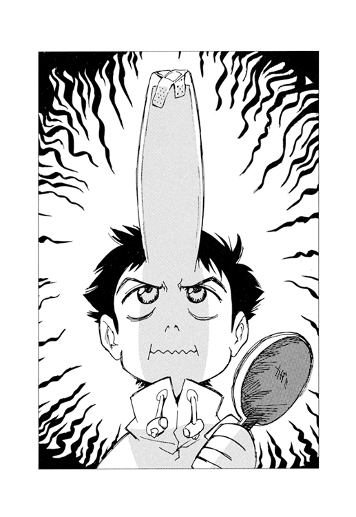

| フリクリ １ | |
| 榎戸洋司 企画・原作/GAINAX | |


フリクリ
榎戸洋司
企画・原作/GAINAX
角川スニーカー文庫
本作品の全部または一部を無断で複製、転載、配信、送信したり、ホームページ上に転載することを禁止します。また、本作品の内容を無断で改変、改ざん等を行うことも禁止します。
本作品購入時にご承諾いただいた規約により、有償・無償にかかわらず本作品を第三者に譲渡することはできません。
本作品を示すサムネイルなどのイメージ画像は、再ダウンロード時に予告なく変更される場合があります。
本作品は縦書きでレイアウトされています。
また、ご覧になるリーディングシステムにより、表示の差が認められることがあります。
カバー・口絵イラスト／鶴巻和哉
本文イラスト／今石洋之
１
これは、まあナオ太にとって恥ずかしい話だ。と、思う。
そのころ、ナンダバ・ナオ太は小学六年生で、学校の成績などはかなり良く、クラスではクールで通っていた。周囲の同級生からは一目おかれ、成熟した知性の少年、とひそかに自負もしていた。
世の中には本当の意味での大人なんていない。
それが、ナオ太の口癖だった。（でもテレビドラマなんかを見て、やはり渡哲也だけはホンモノの大人かもしれないとかこっそり思ったりもしていた）
あのころ、ナオ太はサメジマ・マミ美と一種の性的関係にあった。
マミ美は女子高生だった。どこか地に足のついてない、明日にも学校を中退しそうな高校二年生。よく授業をさぼっては携帯ゲームで遊んでるようなやつだった。
ナオ太はとくに年上好みというわけではなかったけれど、そのマミ美との一種の性的関係をやめられないでいた。〝一種の〟というのは、当時のナオ太がまだ小学六年生であったことに由来している。健全な精神は健全な肉体に宿るらしいが、早熟でクールな情熱に、しかし肉体はなかなかついてこない。
いつもナオ太は一方的に弄ばれているだけ。
実際、マミ美は、当時のナオ太のことを恋愛の対象だなんて思ってはいなかっただろう。せいぜいヌイグルミとかペットのハムスターのような愛玩物程度にしかみていなかった。いや、ペットよりもっと悪いかもしれない。なにしろナオ太の立場は〝代用品〟だったのだから。
代用品。
悲しい代用品。
代用品の悲しいところは、選ばれた理由にあまり必然性がないことだ。
それでも、秋の匂いを感じると、ナオ太はふと懐かしく思い出してしまう。あれはナオ太にとり、いろんな意味で特別なシーズンだったから。
街は疎瀬市という地方都市にあった。駅前には政府からの交付金でできたオブジェが無意味に高くそびえる、どこにでもあるような街である。
一本の大きな川が昔ながらの田園と新興都市を区切っていて、その川原、疎瀬橋という橋のたもとで、ナオ太とマミ美はよく一緒に過ごしていた。
〝彼女〟がやってきたあの日も、二人はその堤にいた。
あの日──。
マミ美は、いつも通りに脈絡のないことを口走りながら、ナオ太のバットを振り回していた。二人とも学校からの帰宅途中で、マミ美は制服姿のままだった。
放課後、というのは特別な時間だ。家と学校。この二つの檻を移動するあいだの自由時間には、きっと成長するのに必要な特別な意味がある。その解放の気分には大人の自由が垣間見えるから。
いつかは永遠の自由時間が手に入る。
いつかは勉強なんかしなくていい日がやってくる。
そんな予感を心のどこかに抱きながら短い自由を楽しむ。結果的に放課後とは子供がいちばん子供らしく過ごす時間となる。
けれどなんたる無粋か、こともあろうにナオ太はいつもその川原で宿題とか予習とかをやっていた。
秋風の中、教科書を開いてるそんなナオ太を、マミ美はあの日も訝しそうに見ていた。
「タッくん、なんで勉強するんスか？」
ちなみに、マミ美はナオ太のことをタッくんと呼んだ。
「バカになりたくないから」
「マミ美のもやってくれないかな」
「ゲームばっかりやってるとフーテンムスメになっちゃうぞ」
「フーテンムスメってなに？ タッくん、むずかしい言葉知ってるんスねえ」
「......」
しかし、実際にはフーテンムスメというのがなにを意味するのか、ナオ太もよくは知らなかった。
なにかフーセンガム関係の言葉だっけ？ 意味もなく街をうろつきながら、クチャクチャとフーセンガムを嚙んでるバカな女の子のことを言うんじゃなかったかな。いや、いやいやいや、マミ美に流されてどうする、フーセンガムなんてどうでもいい、僕はクールミントに生きていくんだ。
「ねえ、なんで家でやんないの？」
「カッコ悪いから」
勉強しているところを父親に見られるのがナオ太はとても嫌だった。正確に言えば、勉強しているナオ太をひやかす父親の態度が嫌いだった。勉強しなくても成績は優秀。いや、成績はいいけれど勉強には興味なし。それがナオ太の理想とする自己イメージである。
「自分こそ、なんでいつもここにくるんだよ」
マミ美は楽しそうにクスクスと笑う。
「それはねえ」
「なんだよ」
「好きだから」
内心、ドキリとしながらナオ太は訊く。
「......好きって？」
「ここが」とマミ美は、ニベもなく言い放つ。
タッくんのことなんて本気で好きなわけないじゃない、という口調だ。
そう、代用品はどこかで立場をわきまえねばならない。
しかしナオ太の期待を見透かしながら意地悪に答えたように思えるマミ美は、その直後、そっと背後から抱きついてくるのだった。
「遊ぼ」
ナオ太の手に、あだっぽく自分の手を重ねる。ひんやりと冷たい手。ナオ太のペンを握った手は、一瞬、動揺したように硬直するが、そんなときも表情だけは辛うじてクールミントを装っていた。
「タバコくさい」
「吸ってないっス」
余裕でつぶやきながら、乾いた草むらの上、まるでぬいぐるみのようにナオ太を背後から抱きしめるマミ美。そのやわらかな胸が無造作にナオ太の背中に押しつけられる。
マミ美は、ナオ太の肩や腕をなで、耳たぶや首すじに口づけをはじめる。ナオ太は、しばらくされるがままにしている。
わりきって楽しむほどの余裕はなく、かといって抗うわけでもなく、ナオ太はいつもただその流れに身をまかせるしかなかった。
「あのさ、こういうことするっていうのはさ、つまり......」
「マミ美は、こうしないと、あふれちゃうのさ」
──あふれちゃう？
あふれちゃうってなに？
あふれちゃうとどうなっちゃうんだ？
育ち盛りの少年の脳裏にはさまざまな疑問と好奇心がふくらんだが、愛撫されているとき、それは言葉にはならなかった。
マミ美はさらに強く抱きしめ、ナオ太の首すじに口づける。
その〝遊び〟のとき、マミ美の匂いに包まれながら、ナオ太はいつも街の小高い丘にそびえる工場を見つめていた。
なんだかアイロンに似たその工場は、街のどこからでも見えた。
それはＭＭという医療機械の工場で、誘致されるとき、街中の大人たちは大騒ぎだった。
みなさん、これで疎瀬市は産業都市となり過疎化の心配もなく潤います。
ナオ太が六年生のあの頃、すでに街の多くの者はそのプラントで働いていた。学生たちにしても〝バイトする〟と言えば、それは普通、ＭＭでのアルバイトを意味したぐらいだ。
恩恵にあずかっている関連業者も含めると、疎瀬市の大半はその工場を中心に回っていた。そしてＭＭ付属病院、ＭＭ付属図書館、ＭＭ付属ゲートボール場なんてものが次々と増えていった。
一日に何度か、その工場の建物からは白い煙が吐き出された。
マミ美に抱かれながら、秋空にのびるその一条の白煙を見るナオ太は、それがなんだか世界から色彩を奪っていく元凶のように思えたものだ。この世のすべてを無彩色に変えていく白い煙。
それはうっすらと半透明にひろがり、やがて街全体を静かに覆っていく。
「がぶ」
マミ美がナオ太の首すじに軽く歯をたてる。
すごいことなんてこの世の中にはない。
ただあたりまえのことしかおこらない。
マミ美とのこうした〝遊び〟だって、どこにでもあるような関係さ。
どこまでも広がる退屈で平坦な世界──それが自分の住んでいる現実だ、と当時のナオ太は思っていた。
遊びが一通り終わると、ナオ太は立ち上がり、近くにある缶ジュースの自動販売機にコインを入れる。口の中がカラカラだ。今日もまた何度も何度も唾を飲みこんでしまった。
缶コーヒーのボタンを押そうとしたとき、けれど、横からのびたマミ美の指が、先にレモンスカッシュを押してしまう。
「すっぱいのは嫌いなんだけど」
マミ美は出てきた缶をさっさと取り出し、ナオ太を無視して勝手にプルリンクをあけ、ゴクゴク飲む。
「小学生からタカるか」
「あと、ついちゃった」
マミ美はナオ太の首すじにふれる。そこには、できたばかりの痣がある。もちろんキスマークだ。
「どーする？ バンソウコウで隠す？」
「......」
負けている、とナオ太は思った。
クラスでは一番クールミントだと自他ともに認めるこのナンダバ・ナオ太が、なんだか、完全に負けている。この脳ミソがフーセンガムの、それもパパイヤ味で構成されているような女子高生ごときに、押されまくっている。
はい、と言ってマミ美は飲みさしの缶ジュースを差し出した。
「なに？」
「なにって、タッくんのでしょ。まだ半分のこってるっス」
缶を受取りつつ、しかしながらナオ太の目はそのマミ美の唇に奪われていた。
レモンスカッシュにぬれたマミ美の唇。
なまいきにもつややかな。
ほんのついさっきまで、それはナオ太の肌を這っていたのだ。
実は数えきれないほど首すじや耳たぶを愛撫されながら、ナオ太は、まだ一度も本当のキスをしたことがなかった。
なぜならマミ美は、ついにナオ太の方から求めても、かたくなに拒み、それだけは許さなかったから。唇を重ねることだけは認めなかったから。
だけど生殺しにしてナオ太をからかっているわけではない。ナオ太にとって、もっと心を重くさせる理由があるのだ。
タッくん、とマミ美は呼ぶ。
ナオ太はその理由に気づいていた。〝ナオ太〟の太の字をとってタッくん、とマミ美は説明する。説得力のない説明だ。パパイヤ味の説明だ。
今はアメリカに野球留学しているナオ太の兄、タスク。マミ美は、実はそのタスクのガールフレンドなのだ。
そして代用品にはキスは許されないらしい。
──きっと二人きりのときには、兄ちゃんのことをタッくんと呼んでたんだ。
手にした缶を、ナオ太は道路に投げ捨てた。
「こら、空き缶はクズカゴに！」
空き缶ではなかった。半分残ったレモンスカッシュで宙にアーチを描きながら、缶は道路に転がる。
ナオ太の脳裏には、一通のエアメールが浮かんでいた。
それは、いつもナオ太の心の中で揺れ動くパンドラの箱である。
エアメールに同封されていた、タスクと金髪の女の子とのツーショット写真。
「あのさあ......」
言い出しにくそうに口にする。
「兄ちゃん、アメリカでさ......」
マミ美の目が、ふとマジになる。
ナオ太とのキスを拒絶するときより、さらに真剣な表情に変わる。
あとから考えれば、あのときマミ美はもうそのことを知ってたのかもしれない。それとなく感じてはいたのだろう。
けれど当時のナオ太には、そんなことを察する余裕はなかった。
開けるのか？ 僕はいよいよ、このパンドラの箱を開けるのか？ 今開けるのか？ もしかしたら、二度とマミ美と二人でこの川岸にくることはなくなってしまうかもしれないんだぞ。ホントに開けるのか？ マミ美に弄ばれる放課後のひとときを、僕は実は失いたくないんじゃないのか......。
だけど、いずれにしろ、言わなきゃいけないことではある。
伝えなきゃいけないことではある。
言うんだ。
「兄ちゃんはアメリカで......」
口ごもるな、いっきに言うんだ！
だがそのとき──。
そう、まさにそのときだった。
シリアスモードに突入の二人は、周囲に対する注意が散漫になっていた。
だから近づくバイクの爆音に気づくのが一瞬、遅れた。
「いただきマンモス！」
と不可解な叫びをあげて、そのバイクの女はナオ太めがけて突っ込んできた。
バイクは、スクーターだった。たしかベスパとかいう外国のやつ。
ベスパ女は背中にしょったエレキギターを手にすると、すれ違いざまにそれでナオ太をなぐろうとかまえた。
──なんだ？
通り魔、という言葉が、一瞬ナオ太の脳裏に浮かぶ。
狂ってる。
ふりあげられたギターが猛スピードで接近してくる。
物理的な恐怖にナオ太の足はすくんでいた。
かなり死にそう。
きっと死ぬ。
やばい。
だがそのとき──
「あれ？」とベスパ女。
さきほどナオ太の投げ捨てたレモンスカッシュの缶に前輪をとられ、ベスパはコントロールを失う。女はさらに奇声を発する。
「ららららららら......」
だが一難去ってまた一難。よほどナオ太の日頃の行いは良くないのか、それは状況をさらに悪い方へと導いた。
ベスパはまっすぐにナオ太に直進し、そして、その体をはねとばしてしまったのだ。
ナオ太は飛んだ。
そしてベスパ女のらららという声を最後に、意識の電源が切れてしまった。
路上を転がるナオ太。
ぐったりと横たわるナオ太の体にマミ美は駆け寄ろうとする。
「タッくん！」
「ストップ！」
そんなマミ美を制する、鋭い女の一声。
傍らにベスパを停めた女は、なんだか偉そうな態度でマミ美に命じる。
「ストップ・ザ・ネイティブギャル（そこの地元の女の子うごかないで、という意味らしい）」
こんな怪しげな女に仕切られる義理はまったくないのだが、どこか権威に弱いマミ美はつい命令通りに止まってしまった。それもダルマさんがころんだ状態で、滑稽にも凍りついたようにピタリと。
「〝太郎くん〟はいま頭を打ったから、ヘタに動かさない方がいい」
そう言うと女はベスパを降り、自分だけナオ太に近寄る。
あ、このひとニホンゴ話せるんだ、とマミ美は思った。なんだか言葉が通じない相手のような気がしたのだ。
「でも、あの、太郎くんじゃなくてナオ太くんっていうんです」と余計な説明を加える。「マミ美は勝手にタッくんて呼んでるんですけど......」
女は屈みこみ、ナオ太の胸部にそっと耳をあてたりして容体を調べる。
心得があるようにふるまっているが、しかし見るからにインチキ臭い。
そして、太郎君が死んでいる、と唐突に驚きの声をあげる。
「この少年は、完璧に、そう、まさに太郎くん的に死んでいる！」
この人、やっぱりちょっと足りないんじゃないかしら、とマミ美は思う。
だが女がヘルメットを脱ぐと、その容貌は思いがけず美人で、マミ美を驚かせた。
瞳の色は鮮やかな青リンゴの宝石。どこの国の人だろう、あるいはカラーコンタクトかな、と思ったが、よく見れば肌の質感も日系人とは微妙に違うようだ。
野性の女子高生（？）の直感で、マミ美は相手の女がただものでないことを察した。相手の力量をその肌で感じた。女の緑の目は、非常に貪欲な意志となにものにも束縛されない自由の光を放っている。〝強いやつ〟の目。ちょっといいかも、と思った。
「ああ、殺してしまった！ せっかくみつけたコンチキショウを、あまりにも完璧に殺してしまった......ええい、生き返れ！」
あっ、とマミ美は声をあげる。
女は、いきなりナオ太にマウス・ツウ・マウス──要するにキスをした。
しかもかなり濃厚に。躊躇なく。延々と。
これはやばい。さすがになにかしなければとマミ美は思ったが、さりとて目の前の状況に対し、どう対処すればいいのかとっさに判断できなかった。
サメジマ・マミ美は女子高生でありながら喫煙を嗜むし、学校もよくさぼる。深いレベルでは規則や規律とは無関係な人間だと自分では思っていた。けれど、下校途中の小学生をバイクではねて気絶させ、その唇を奪っているこのボウジャクブジンな女は、マミ美の枠をさらに一歩こえていた。この緊急事態に、自分は今なにができるのか......。
そうだ、携帯電話もってるんだから警察に連絡すれば、とか思いついたときには意識がもどったらしく、抱きすくめられたナオ太があがきはじめた。
ようやく唇を離し、女が言う。
「やった、太郎くんが生き返った」
「だから、太郎くんじゃないんです」とマミ美は再び余計な訂正を加えてしまう。
「え、そうなの？ よかったよ、太郎じゃなくて、もし太郎だったらあぶなかったよ。死んでるよ、絶対。ついてるじゃん、あたし」
不可解に喜びつつ、しかし女は再びギターを振り上げると、まだ朦朧としているナオ太の頭を、思い切りよく横殴りする。
マミ美は呆然とその暴力を見ているしかなかった。
「あれれ、ハズレかな。出てこないじゃん」
女は左手のブレスレットを見ながら、さらに意味不明のことをつぶやいた。
そのブレスレットは時計ではなかった。手首を巻く金属ベルトの一部に短い鎖のついた見慣れない装身具である。
その鎖を見ながら首をかしげる女は、いきなりナオ太の頭を激しく揺すり始める。
「だめだ、もう一発やってみるか」
さらに女は凶器であるギターに手をかけるが、さすがにマミ美は駆け寄ると、かばうようにナオ太を抱きしめた。
「頭を打ってるからヘタに動かさないでください」
ついさっきそう言ったのはアナタでしょ、という非難の目でマミ美は女と対峙する。
女は、値踏みするような目で二人を見た。
「おまえ、なにした？」
意識のもどったナオ太が、ようやく口を開いて女に問いただす。
「なにって、人工呼吸でしょ？」
「そうじゃなくて」と、言いながら、ナオ太は思わず自分のぬれた唇を手の甲でふく。
「舌、入れられた？」とマミ美が、訊く。
ナオ太は言葉につまる。たった今の不本意なファーストキスを思い返す。
しかもそれは辛口のカレー味だった。
最低だ。
だが一番の問題は唇を奪われたこと自体ではなく、それをマミ美に見られたことだ。
──なんてことだ。
マミ美は、言葉につまったままのナオ太をじっと見つめている。
ベスパのエンジン音がする。
見れば、すでに女はシートにまたがり、逃げ仕度である。
「役立たず！」
女はもう一言、場違いな言葉を捨てゼリフのようにナオ太に向かって叫ぶと、アクセル全開で去っていく。
──なんだったんだ？
まさにセイテンのヘキレキのごとき狂人であった。
ぐんぐん加速して遠ざかるベスパは、凄まじく高性能なようだ。
その小さくなる女の背中を見ながら、しかしマミ美は感心してつぶやく。
「いいなあ、あれ」
「〝いい〟？」
「自由って感じ」
「......」
「でも二十歳は過ぎてたね」
「中身の成長してないバカ大人め......痛て」
ギターで殴られた傷が、急に痛み始めた。
それがナオ太と〝彼女〟の出会いだった。
２
ナンダバ家はパン屋を営んでいた。
祖父シゲクニが始めた仕事で、店の名前も『製パン・シゲクニ』という。
シゲクニ自身は高齢のため隠居し、現在その稼業はナオ太の父、カモンが引き継いでいる。
カモンはシゲクニの実子ではなく、入り婿である。昔は中央の出版社で働いていたというが、そこでシゲクニの一人娘と知り合い、結婚したのだ。
やがて長男タスクが生まれたとき、子供は地方で育てたいと、夫婦は妻の実家であるこの疎瀬市に引っ越してきたのだ。
だがその母親は、ナオ太が幼稚園に入るまえにいなくなった。死んだのではなく行方不明だ、と聞かされていた。
だから現在の家族は、祖父シゲクニ、父親カモン、アメリカに留学中の兄タスク、そしてナオ太と、男ばかりの四人家族である。あと飼い猫のミユミユというのがいるが、これも年寄りのオス猫である。ミユミユはかなり太ったデブ猫で、その鳴き声などはどちらかというとイノシシのようだった。
猫といえば、ナオ太には思い出す光景がある。
あれはちょうど母親がいなくなったころ、大きな台風がこの疎瀬市を襲ったことがあった。ナンダバ家のわきには、幅２メートルほどの両側をコンクリで仕切られた川があり、普段は水量も少ないのだが、その台風のおりは、豪雨のため激しい流れとなった。水かさは増し、灰色の濁った水が滝のように流れた。
幼いナオ太がひとり部屋の窓からその濁流を見ていると、なんと子猫が一匹、ダンボール箱に入ったまま流されてきたのだ。
子猫は幼いナオ太と一瞬、目があった──ような気がした。
あっと声をあげたが、みるみる流されて遠くに消えた。二階の窓から見ているナオ太にはどうしようもなかった。
ナオ太はそのことを誰にも話さなかったが、それから半年ほどして、カモンが猫を一匹ひろってきたのだった。
そのころカモンはよく家をあけて出歩いていた。あとから思えば失踪した母親を探していたのかもしれないし、あるいは単にショックを受けて放浪していたのかもしれない。それはわからない。けれどある日、猫を拾って帰ってくると、これでネズミによるペストの心配もなく安心してパン屋ができる、とか言って飼いはじめたのだ。
馬鹿にしていたパン屋をカモンがわりとまじめにやりはじめたのは、確かそれからだった。
ナオ太はその猫──つまり、現在も飼っているミユミユは、もしやあのとき流されていった子猫かもしれないと思ったが、特徴を覚えていたわけでもなく、特定することはできなかった。
......長い夜には、いらない過去をいろいろと思い出してしまうものだ。
すでに深夜。
──眠れない。
ナオ太は眠れずにベッドの中で胎児のように丸くなっていた。
眠れない眠れない眠れない。ときおり、背中に悪寒が走る。妙に落ち着かない気分だった。
──もしかしたら風邪ひいたかな？
あまり考えたくないが、あのベスパ女に口移しで伝染されたのではと嫌な考えが浮かんだ。
昼間の女の唇の感触を、ふと思い出してしまう。
辛口カレー味のファーストキス。
あの味。
──忘れなきゃ、あんなの事故みたいなもんなんだから。
寝返るとベッドが軋む。
ベッドは二段ベッドで、ナオ太は下を使っている。上はアメリカに野球留学中の兄タスクの場所であり、留守のときも互いに使ってはいけないことになっていた。せまい二人部屋の中で、そのベッドだけが兄弟にとって互いに侵すべからざる神聖なプライヴェート空間になっていたのだ。
いいなナオ太、俺が上、おまえが下だ。
兄が野球選手になったら、父カモンはナオ太が家業を継ぐことを望むのだろうか......。
布団から顔を出し、細い息を吐く。
やはり寝苦しい。
熱があるかもと、額に手をあててみる。すると──。
──なんだ、これ？
額に、大きな突起物ができていた。
大きな突起物。
おおきなとっきぶつ。
オオキナトッキブツ......ってなに？
僕は寝ぼけてるのか？
事態の異常さを理解すると、布団をけとばし、上体を起こしてベッドに腰かける。
落ち着け。落ち着くんだ。
とにかく確かめようともういちど額に手をやる。
「痛い！」
思わず声をあげた。
一瞬、激しい痛みが走る。と同時に、頭部に大きな脈動が始まった。
ドクッ......ドクッ......ドクッ......。
祭りのとき、シゲクニに酒を飲まされ悪酔いした感覚に少し似ているが、違うのは今夜はアルコールを一口も飲んでいないということだ。
ドクッ......ドクッ......ドクッ......。
まるで頭に心臓があるように、激しく鼓動している。いや、脈打ってるのは、突起物か。
ナオ太は顔面蒼白になりつつ、今度はそっとさわってみる。
やはり硬い突起物が一本つきでている。長さは十数センチくらい。額からまっすぐに伸びている。
強く握ると、額の付け根が痛くなる。
──なんだよ、これ。
そのときナオ太は、昼間あのベスパ女にギターで額を殴られたことを思い出した。
病院行けば、とマミ美は言ったっけ。
だいたいバイクにはねられたのだから、異常がなくても病院で検査くらいはしておくべきだった。だが、ただの打撲傷だからと、ほうっておいた。マミ美が横にいたこともあり、クールミントに強がってしまったのだ。
「だけど病院行ったら、なんとかなるのか、これ......痛い！」
ドクッ......ドクッ......ドクッ......。
ナオ太は電気スタンドをつけ、鏡を見た。
夢ではなかった。
やはり突起物がでている。
青黒く太い棒が、自分の額から突き出ている。
突起物、というより、もはや〝角〟と言った方がふさわしい。
僕の頭にはいま角がはえている。
ボクノアタマニハイマツノガハエテイル。
こんな病気があるのか？

これはヒューマンコミックスではなく、まだ恐怖コミックスと銘打たれていた頃の初期の「ブラック・ジャック」に出てきそうな奇病ではないか。なんだろう。父親や祖父は隠していたが、実はナンダバ家は鬼の家系で、それが昼間のショックで覚醒したとか、そういうことなのだろうか？
──いや落ち着け、物事はもっと合理的に科学的に考えるんだ。
そうだ、がまん強い人間ほど脳の前頭葉が発達するとか聞いたことがある。もしや自分はがまんばかりしすぎて、そのせいで前頭葉がこのように特殊変異を起こしたのではないだろうか......ああ、ぜんぜん科学的じゃない！
不安が鼓動を激しくさせる。
さらにナオ太は愕然とする。
角が鼓動のリズムに共鳴して少しずつ大きくのびていくのだ。
ドクッ......ドクッ......ドクッ......。
冗談じゃない。
ナオ太はあわててその成長を手で押さえた。
押さえられた角は、すると意外に素直に額の中にひっこんでいく。同時に頭の鼓動や痛みもおさまる。
静かな夜の部屋に、時計の秒針音だけが響く。
「......」
おさまってみれば、やはり悪夢だったとしか思えない出来事だ。
やはり寝ぼけていたんじゃないのか？
いや、寝ぼけていたんだ。
理性的に考えればありえないことだ。
神さま、お願い！
恐る恐る、額から手を離してみる。
しかし──今夜の神さまは意地悪らしく、角はまた無遠慮に伸びてくる。
ドクッ......ドクッ......ドクッ......。
どうやらずっと押さえてなければいけないということらしい。
ナオ太は不安におののいた。
僕はいったいどうなってしまったんだ？
こんなことは誰にも相談できない。というより、誰にも知られたくはない。
「明日の学校はどうするんだ！」
この超常的な状況下でまだそんな小市民的なことを心配するナンダバ・ナオ太であった。
ま、とりあえずの解決策はすぐにみつかったが。
翌日、ナオ太は額にバンソウコウを貼って登校した。
校門近くでクラスメートの女の子、ニナモリ・エリが声をかけてくる。
「おはよ、ナオ太君」
「おお」
さりげなく答えて、足早に校舎へ向かう。
万が一にも角が飛び出してこないよう、額のバンソウコウはかなり強力なものが貼りつけてある。なにしろ瞬間接着剤も数滴たらしてあるという念の入れようだ。（剝がすときの痛みも壮絶であろうと予想される）
なにもそこまですることはなかろうと思う人は、頭から角の生えてくる苦労を知らない人である。
ナンダバ・ナオ太の頭から変な角がでている。
鬼になったナオ太君。
そのような事実は、ぜったい誰にも知られてはならない。クールミントの美意識が許さない。
ところで強力なバンソウコウは必然的に大きく、そして目立つものになった。なにしろ額のまんなかに貼ってあるのだから。
──わかってる、こういうときは変に隠そうとしたり気にしすぎたりすると、面白がってかえって好奇の目が集中してしまうんだ、バンソウコウなんて誰でもよく貼ってるし僕も少しばかりケガして今日はオデコなんかに貼ってるけどこんなのはもちろんぜんぜん珍しくないし面白くもない、という顔をしてればいいんだ。
「どしたの、それ」とやはりニナモリが尋ねる。
「それ？」
「そのバンソウコウ」
「ああ......うん、昨日、うちにきたＮＨＫの集金人とオヤジが、つかみあいの大ゲンカしてさ。思わず止めにはいったら、これだよ」
ナオ太は、あらかじめ用意していた作り話を語る。ちょっと電柱にぶつかって、などというおざなりな理由では、なにか隠しているのではとかえって好奇心をあおる恐れがある。
ベスパ女に殴られたことは知られても困ることではないが、あまりにも突拍子もない話だ。ここはリアルな話よりリアリティの方が大事だと計算した。
けれど世の中にはそういう巧妙なカムフラージュの匂いをこそ鋭く嗅ぎとり、ちょっかいをだしてくるオセッカイがいるものだ。
そしてこのニナモリこそ、まさにその典型ともいえる女の子だった。
彼女の父親はこの疎瀬市の現市長であり、つねに自分が〝お嬢さま〟であることをさりげなく意識している。彼女自身もクラス委員で、なにごとにも積極的で友達の面倒見がいいとか教師に評価されては喜んでいた。（掃除をさぼってたりすると、いちばんに先生に告げ口するタイプだ）
そしてやっかいなことに、クラスでいちばん成績のいいナオ太に妙な仲間意識を抱いているらしく、普段からなにかというと声をかけてくるのだった。
「すっごく変、似合わない」とバンソウコウを見ながらニナモリは言う。「なんか隠してるんでしょ、それ」
妙に勘も鋭い。
やなやつ、とナオ太は思った。
まだ早い時刻だったが、教室にはすでにガクが来ていた。三年生のときからナオ太と同じクラスの男の子だ。丸坊主頭とクロブチ眼鏡の熱血タイプである。背伸びして大人の写真週刊誌なんかを読んでいる。やはりナオ太のバンソウコウを見て、ケガか、と尋ねたが、それ以上はつっこんでこなかった。
「ところでナオ太、聞いたか？ 光速ベスパがまた出たって」
「光速ベスパ？」
「知らないのか？ 最近、国道付近によく出るんだぞ。ギター持ってて、ベスパに乗ってるんだ」
「ベスパって？」とニナモリが訊く。
「ベスパはベスパ。スクーターだよ」
「光速ベスパ......」
当然ながら、ナオ太は昨日のベスパ女のことを思い出していた。ナオ太に辛口カレー味のファーストキスを残していったあの通り魔。そうだ、あんなハデなやつが街のあちこちに出没してるなら当然うわさになってるはずだ。
「噂じゃ、なにかイケナイことしてるやつの前には必ず現れるんだって。２組のクミコも激辛カレーパンとられたとさ」
「激辛？」
「カレーパン？ イケナイことってなあに」
「そりゃあ、イケナイことはイケナイことだろ」とガクはニヤニヤ笑う。「２組のクミコって、３組のコウジと交換日記してるんだぜ」
「それがイケナイことなの」
「とにかく、本当にイケナイことしてるやつは、その光速ベスパの手にタッチされると体のどっかに〝悪魔の印〟が現れるんだ。クミコはなんともなかったって言ってるけど、怪しいよな。悪魔の印が現れた者は、その光速ベスパに退治されちゃうんだぜ」
──悪魔の印？
恐るべき情報だった。
普段なら、およそその手の幼稚な都市伝説は相手にしないナオ太だが、なにしろ今回ばかりは事情が違う。
悪魔の印。
まさか、僕の額に現れたこの角は......。
いきなりニナモリがナオ太の首すじを指さす。
「これ、なんのあざ？」
「悪魔の印か？」とガクものぞき見る。
「あるわけないじゃん、そんなの」
もちろんそれは、昨日マミ美につけられたキスマークである。普段なら見えないように隠すのだが、額から角が出ている今日ばかりは、さすがにそっちまで気がまわらなかったのだ。
「おまえ、ホントはイケナイことしてるんじゃないか？」
「なんだよ、イケナイことって」
イケナイこと？ バカバカしい、僕とマミ美とのことなんてよくあることさ、とナオ太は自分に言い聞かせる。なにが悪魔の印だ......。
ナオ太はシャツの襟をあげ、首すじを隠す。
ニナモリはナオ太のバンソウコウに目をやったが、ガクの前では、そのことに関してはなにも言わなかった。
数人のクラスメートに額のバンソウコウのことをきかれたが、適当にごまかし、ナオ太は一日の学校生活をなんとか無事にやりすごした。
放課後。
終業のチャイムと同時に教室を飛び出したナオ太は、一人、いつもとは違う道を歩いている。
ナオ太の帰宅コースは基本的に二種類ある。
ひとつは定められた通学路。みなさん、道草をくわずに、車と変質者に気をつけてまっすぐに帰るんですよ、という道。
いまひとつは、疎瀬橋に通じる、マミ美との逢引のための道である。
実は二人はいつも会う約束をして待ち合わせているわけではない。
ナオ太が橋にいけば、なんとなくマミ美も来ていた。マミ美が橋に来れば、偶然ナオ太も来ていた。気まぐれで橋にくればたまたま居合わせるだけ。
建て前はそういうことになっていた。それが現在の二人の安全ラインだった。
実際、マミ美が来なくてナオ太が川岸で一人きりを過ごした日は多いし、逆にナオ太が行かなかったためにマミ美が一人で時間をつぶしていた日もあるはずだ。
もちろん本当は互いに出会うために足を運んでいるのだが、会うための約束をした瞬間から、二人の関係は微妙に変化する。ナオ太もマミ美も、半ば無意識ではあるが、それを恐れていた。
もっとも、今日ナオ太が歩いているのは、そのどちらでもない道である。
──やっぱり、病院に行こう。
病院に行ってこの角が治るとは、あまり期待できない。正直に言って、これは病気の類いとは考えにくいシロモノである。けれど、他にどうすればいいのか、ナオ太には思いつけなかった。願わくば、治療法のあきらかな病でありますように。
用意のいいナオ太は家を出るとき、保険証をちゃんと持ち出していた。
街でいちばん大きな病院へと向かう。
その途中、踏切りで佇むナオ太の目前を、轟音をたて電車が横切っていく。
遮断機があがるとき、ナオ太は自分のすぐ傍らにアイドリングするバイクのエンジン音を聞き、硬直する。
思わず顔色を失い、息を飲む。
恐怖が背筋を走った。
悪い予感が的中し、そこには昨日のベスパ女がいた。
昨日は出会ったばかりで、ただショックの連続だった。
しかし、今日は違う。いちどハチに刺された子供は、次は見ただけで恐怖する。
ハチ女は激辛カレーパンを齧っていた。まちがいない、こいつこそガクの言ってた光速ベスパだ。噂が本当なら、このパンもまたどこかの子供から取り上げたのだろうか。
遮断機はあがったが、ナオ太はその場に立ち止まったまま動けずにいた。
こういう相手はヘタに刺激するとまずいかもしれない。
「ねえ」と女はなれなれしい口調で言う。「昨日あれからどうした？ なんか、変なことなかった？」
おまえの存在がいちばん変だよ、とナオ太は思う。
「ねえ、あったでしょ、なんか変なこと？」
「......なんだよ、変なことって」
女は、ふとナオ太の額のバンソウコウに気付き、嬉しそうな顔になる。
「なにそれ、そのバンソウコウ」
「おまえが昨日なぐったんだろ」
「すっごく変、似合わない」女は疑惑の目でナオ太の額を見ながら、今朝のニナモリと同じことを言う。「なんか隠してるって感じ」
「......」
こいつは角のことをなにか知ってるのだろうか？
一瞬ナオ太は、女に自分の体の変化を相談すべきなのかと迷う。
しかし、その背中にある例のギターを目にして思いなおす。
いやいや、やはりすぐにも逃げなきゃ。深く関われば、いつまた暴れだすかわからない。
今度こそ殴り殺されるかもしれない。なにしろ相手は狂人なのだ。
再び踏切りの警報機が鳴り、遮断機が降り始める。
そのチャンスとタイミングを逃さず、ナオ太は遮断機が降りるのを待ってからそれをくぐって逃げた。
ふりむけば、女はその場で動かず、アクセルから手を離したままナオ太を見ている。
電車が来て、二人の間を分断する。
──ざまあみろ！
ナオ太は全速力で走り、逃げた。
疎瀬市でいちばん大きな病院は、ＭＭ付属病院である。
ＭＭは最先端医療機械の世界一を自称する会社だけあり、その病院の設備は国内でも最高基準のものをそろえていた。救急医療施設だけでも集中治療室が二十ベッド、高度治療室が三十ベッドと、人口が六万たらずの疎瀬市には過ぎた数が設けられている。
その清潔で明るいロビーには、天窓から光があふれていた。
神経科、内科、整形外科......どの専門診療科を選ぶか少し迷ってから、ナオ太は脳外科と受付に告げ、その診療室の扉をくぐった。
室内を見回す。ＣＴスキャナーやＭＲＩなど、さりげなくハイテク装置が並んでいるのを目にすると、ナオ太の胸には期待がふくらんだ。さすがに医療機械メーカーの付属病院だ。なんだか頼もしい。ここなら、少なくともこの奇病の原因くらいはわかるんじゃないだろうか。
看護婦がひとり、ナオ太に背をむけたままカルテを整理している。
「あのう......」
「そこのベッドに寝て」
看護婦の指示に従い、ナオ太は冷たい寝台に横になる。
「目を閉じて楽にしてください。どうされました？」
「はい......えっと......」
「ここは病院です。思春期の悩みでも恥ずかしがらずに話してください」
「いえ......ちょっと変なものができちゃって」
「どんなもの？」
「どう説明すればいいのか......」
「ほら、恥ずかしがらないで」
「まあ〝突起物〟なんですけど」
「もちろん、思春期の悩みはいつだって突起物です。いつからですか？」
「昨夜、夜中に突然......」
「やっぱり夜中か」
「あの、額のところなんです」
「ではこのバンソウコウの下ですね？」
「はい、押さえてないと、飛び出してくるんです」
「若いわねえ......わかりました」
「え？」
「それはフリクトニク・クリップルウェーバー症ですね。思春期心因性自己完結皮膚硬化症。子供が無理すると頭に角が生えるって病気です」
──インチキくさい！
そのときになって、ようやくナオ太はその看護婦の声に聞き覚えがあることに気付いた。
あわてて目をあければ、やはり看護婦はあのベスパ女である。
「いつのまに！」
「で、実際のとこどーなの、そのバンソウコウの中？」
「おまえ、ここでなにしてるわけ」
「あたしから逃げられるとでも思ったわけ？」
女は不敵に微笑むと、いきなりまた例のエレキギターを振り上げる。
ナオ太はもちろんベッドから飛び降りて逃げる。
──こいつ、ホントにここの看護婦なのか？
そのとき、隣の控室に下着姿で縛られた本物の看護婦と、殴られて気絶した医者がいることを当然ナオ太は知らない。
「逃げるな。いま楽にしたげるから」
「冗談じゃない」
悪魔の印が現れた者は、その光速ベスパに退治されちゃうんだぜ......。
肉食猛獣に追われる恐怖で、ナオ太は病院の中を一目散に逃げ出した。
悪夢だ。
３
ようやく家に帰りついたナオ太は、疲れてベッドにダウンしていた。
心臓の激しい鼓動はまだおさまらない。これほど走ったのはマラソン大会以来である。
──なんなんだ、このドタバタ騒ぎは？
昨日よりも今朝よりも、状況は悪くなっていた。
たまたま遭遇したはずのあの女は、いまや明確にナオ太を目標にしてつけまわしている。
光速ベスパ。
あの女は、やはりただものではなかった。
病院内の廊下をバイクで走り回ること、出入り口のガラスをぶちやぶること、商店街の人込みの中を暴走することなど、あらゆる破壊行為になんの躊躇もなく、ナオ太の駆け込んだ交番の巡査など一撃で殴り倒してしまったのだ。
生きてここにあるという喜びを、ナオ太は初めて実感していた。
よく逃げられたもんだ。よくぞ生きてここに帰ってこれたものだ。
正体不明の通り魔に目をつけられてしまうとは、なんという不幸だろう。
そして角は相変わらず額から消えない。結局、女につけまわされ、他の病院へ行くこともできなかった。そういえば女はこの額のバンソウコウをかなり気にしてたようだ。
やはりあのカレー味のキスで怪しいヴィールスを伝染されたのかもしれない。どうすればこの角は消えてなくなるのか。まさか一生消えないのか？
これがあるから、女はナオ太を狙っているのだろうか？
やはりこれは悪魔の印なんだろうか？
もっと大きくなるのか？
僕は死ぬのか？
それとも......。
ふと階下から、父カモンが大声で呼んでいるのに気づく。
いつのまにか夕食の時間になっていた。
ナンダバ家においては、食事は家族そろって食べるのがきまりである。
朝と夜、そして学校が休みの日は昼も、ナオ太は父、祖父とともに食卓を囲む。
そんなことはあたりまえだと思っていたが、世間では、案外そうでもないことを最近ナオ太は知った。毎度の食事を必ず家族そろって食べるのは、意外に少数派であるようだ。クラスメートの中には、週に一度も家族と食卓を囲むことがない子も結構いる。そういう生徒を世間の大人たちは可哀相な子とかいうが、ナオ太は、むしろうらやましいような気もしていた。自分一人の食事、というのは、なにかカッコイイ。自由独立の第一歩という感じがする。
しかし現在のナンダバ家ではそんなことは許されない。それに関しては父カモンは頑としてゆずらず、己のポリシーをつらぬいていた。カモンにとり家族がそろう食事の時間はなにか特別な意味があるらしい。食欲がなかろうが多少の熱があろうが、それこそ角の一本や二本はえてこようが、食事の刻限は必ず守らねばならない。
だからナオ太は食事に降りていく。
家族はナオ太の悩みを相談できる対象ではなかった。へたに風邪などひくと、おまえは注意が足りないと叱られるのが常だった。
そして。
夕食のため階下におりてきたナオ太は、その部屋を見て凍りついてしまった。
いたのだ。
そこに。
あのベスパ女が。
「うっす」
女はナオ太の姿を見てあいさつする。相変わらずなれなれしいが、それ以前に女はカモンやシゲクニとともに食卓を囲んで座り、すでになじんだ様子で味噌汁をすすっていた。
「おまえは......」
「紹介しておこう」とカモンがおごそかに言う。「こちら、今日から美人家政婦としてうちに入っていただく、ハルハラ・ハル子さんだ」
「ちょっと味うすいな、この味噌汁」と女──つまりハル子は言った。「だしもいまいちだし」
「すいません」とカモンはあやまる。「明日から気をつけます」
「家政婦って、なんだよ」
そのナオ太の質問には、どうして家政婦がわざわざこの女なのか、という問いと、そしてなぜ家政婦がいるのに父さんが食事をつくるんだ、という疑問が両方こめられている。見れば、カモンは包帯姿である。
「ひかれてしまったのだよ、父は」
「バイクにか？」
「そう、バイクにひかれ、そしてまた、ひいたハル子さんにも違う意味でひかれたのだ、この恋多き父は」
カモンは厚い眼鏡レンズの奥のだらしない目で、精一杯まじめな表情をつくる。
昔は中央で雑誌の編集者をやっていたというが、のばして後ろで束ねた髪型は、いまだに文化人を気取っているらしい。
「やめろ、恋多きとか真顔で言うな」
「いいじゃんねえ」とハル子が口をはさんで弁護する。「人間、死ぬまで恋をしてるもんだよ」
それに勇気づけられたのか、カモンは思い切って訊く。
「あの、ところでハル子さんはどうです？ そういう方面は？」
「どういう方面？」
「だから、『編集長、こんな若い奥さんがいらしたんですか、もう、つねっちゃう』とかっていうドリームな方面ですよ。いや、いやいやいや、もしハル子さんが、『イースト菌をこねてるあなたがプロフェッショナル』って方面に興味がおありなら、それはそれで考えますけど」
父親がいま目の前で通り魔を口説いているという現実に、ナオ太はめまいを覚えた。
「ひかれたとき死ねばよかったのに」とさりげなくシゲクニが言う。
「それはひどい」
カモンは義父のひとことに抗議する。
「ひどいですよ。だいたい、僕はお義父さんのために、こうしてハル子さんを住み込みの家政婦さんとして雇ったのに」
──かんべんしてよ。
ハル子をめぐって父カモンと祖父シゲクニの間で、すでに熾烈な恋の鞘当てが始まっているようだった。額の角のことだけでも頭がいたいのに、この悪夢のようなドタバタ騒ぎを家庭内にまで持ちこむことは断じて認めるわけにはいかない。
「必要なのか、家政婦なんて」
「家政婦は見てたりして」
ハル子は横目にナオ太を見ながら、意味ありげに笑う。
「コギャルとちちくりあってた太郎君を」
「太郎じゃないって言ってるだろ」
「ちちくりあってた？」
ハル子の言葉を耳にしたカモンは、聞き捨てならない、という顔になる。
「誰とだ？」
「誰とでもないよ」
「誰とちちくっていた」カモンは執拗に追及する。
「......サメジマ・マミ美と会っただけだ」
「ありゃいかん」とシゲクニがまたご飯を食べながら、ひとりごとのように言う。「あれはタスクには似合わん」
「おまえ、兄ちゃんの留守中に、兄ちゃんの彼女になにをする」
「だから、偶然会っただけだって」
「やったのか？」
「俺は小学生だぞ。なにを疑ってんだよ」
「やはりそう言うか。そう言うと思った。僕もナオくらいの頃はよくそういう言い訳を口にしたもんや。ナオは僕に似てるからな。やったんやろ？ きっとやってる。絶対やってる」
「へえ、そうなの」とハル子は目をほそめる。「おさかんですな」
「わしだって、まだまだ捨てたもんではないですぞ」とシゲクニ。「しかも独身です」
「なにを言ってるんですお義父さん、僕こそ独身で、しかも男盛りですよ。ところでハル子さんはナオと知り合いなのですか？」
「知り合いもなにも」とハル子は言う。「あたしとタッくんは、もうアレの関係だから」
カモンの表情がこわばる。
「アレ......と、おっしゃるのは？」
「だからアレ。いわゆるマウス・ツウ・マウス」
「マウス・ツウ・マウス......って、あの人工呼吸の？」
「それは黙ってろよ！」
カモンは思わず立ち上がると、息子の肩をつかんで壁に押しつける。
「そうなのかナオ。おまえ、前からどっか海岸に打ち上げられたようなやつだと思っていたけど......」
「わけのわかんないこと言うなよ」
ナオ太はいいかげん馬鹿馬鹿しくなってきた。カモンは妙に興奮しているが、これは怒りのためというより、どうやら家に女性がいてはしゃいでいるだけのようだった。今はそんなことに巻き込まれたい気分ではない。
「ハル子さんともうそんな......」
「ちがうって」
「それで今夜やっちゃおうとか思ってるんだな？ そんな淫靡な野望を、実は今、その無関心を装った表情の裏に隠してるんだな」
「隠してねえよ」
「いいや隠してる」
「隠してねえよ！」
「バンソウコウの下には」とハル子が言う。「なにを隠してるのかな」
──なんてことだ。
悪夢のような夕食を早々にすませ、ナオ太は風呂に入っていた。
このままでは、本当にあのハルハラ・ハル子という女はわが家に住みこむことになってしまう。
なんとかしなければ。
だがカモンとシゲクニが陥落している今、ナオ太ひとりでは抵抗するすべがなかった。
もちろん、父や祖父は、あのハル子が噂の光速ベスパであることをまだ知らない。
だがそれを伝えたからと言って、二人が心変わりするとも思えない。長く続いた男所帯には、あんな変な女でさえ一輪の花に思えるらしい。
だが、なんとかしなければ。あいつは危険な通り魔なのだ。
浴槽につかったナオ太は、そっと額のバンソウコウに手をやる。
あの女と一緒にいたら、この角は治るどころかさらにひどいことになるのではと不安になる。
窓から笑い声が聞こえる。
居間にいるハル子、カモン、シゲクニがアルコールを飲んでもりあがっているようだ。
「オキラクなやつらめ......」
風呂上がりのナオ太が階段を上がっていくと、自分の部屋から話し声がしてるのに気づく。あのハル子の声だ。
「......医療機械を作ってるとか言ってますけど、まだもぐりこむとこまでは......」
──携帯電話か？
あの尊大な女が、珍しく下手にでている。まじめさを装いながら〝相手〟に言い訳をしてるようだった。その口調はなんだか遅刻を叱られてる子供のようでもあった。
ちっ、という相手の男の舌打ちが聞こえ、ナオ太を驚かせた。
では電話ではなく、その話し相手もナオ太の部屋にいるのだ。見知らぬ来客がまた一人。しかもそんな怪しげなやつらが勝手に自分の部屋に侵入している。これは由々しきことだ。
立ち聞きしている場合ではないと、ナオ太は自分の部屋の扉をあける。
するとナオ太の予想を裏切り、部屋には、ひとりハル子が床に正座しているだけだった。
他には誰もいない。
開いた窓の外、ベランダに猫のミユミユがいるだけだ。ひとこえ鳴くと猫は屋根の向こうに消える。
「いま、誰と話してたんだ？」
「ひとりごとの時代」とハル子は笑う。
「人の部屋に勝手に入んないでくれる」
「思春期の男の子には隠し事がいっぱいかな」
そして二段ベッドを見て言う。
「タッくんは下らしいから、あたしは上ね」
「冗談じゃない！」
冗談じゃない、この女は、今夜ナオ太と同じ部屋で寝ると言ってるのだ。
「......ホント、あなたはなんなんですか？」
「さすらいのお手伝いさん」
「昼間はニセ看護婦だったくせに」
「バンソウコウの下」
「あなた、変だよ」
「どうなってる、バンソウコウの下？」
「......」
ちょっと待てよ、とナオ太は思う。
やはりこの角は、昨日このハル子になぐられたか──あるいは、マウス・ツウ・マウスされたためにできたと考える方が納得がいく。どうせこうして家にあがりこんできてるのだから、角のことを相談しても損はないかもしれない。
「......どうなってるんだ、これ？」
「だから、どうなってるの？」
「あんたのせいだろ」
「自分の頭なのに」
「殴られたせいだ」
「だから、はがしてみてよ。どうなってるのか見せて」
「さわるな！」
近づいてくるハル子のにこやかな表情に、一瞬、本能的な恐怖を感じ、ナオ太はその手をはねのける。
気を許しちゃいけない。やっぱりこいつは油断できない。
「おまえは父さんについてきたんだろ。だったら、父さんのところに行けよ。俺にかまうな！」
思わず強い口調になる。
ハル子は黙りこむ。
そしてこれまで見たことのないマジな表情で、黙ってナオ太を見つめた。その目は、なんだか傷ついて不実な男を責めている恋人のようだ。
「なんだよ」
「先に会ったのはタッくんだよ」
そのあまりに素直な口調にナオ太は驚く。
先に会ったのはタッくんだよ、とハル子は言った。
この家に自分が来た理由はナオ太がいるからだ、と言ってるのだ。
もちろん、通り魔女に目をつけられることは恐怖ではある。
ただ、その素直な口調のハル子の表情を見たとき──その緑の瞳で見つめられながら、あたしはあなたがいるからここにきたのよ、と言われたとき──。
ナオ太は不覚にも一瞬──ほんの一瞬だけれど──ときめいてしまった。
──バカ、なに考えてんだ、僕は。
「とにかく！ この二段ベッドの上は兄ちゃんの場所だから、絶対に誰も寝ちゃいけないんだ。そういうきまりだから」
そう言うとナオ太は、さっさと自分のベッドに横になる。
早くでていけ、とハル子に背をむける。
──だいたいこんなことしてる場合じゃないんだ、僕は。
このハル子という女にもわからないなら、なおさら角のことは病院でみてもらうしかない。明日こそ、こいつを出し抜いて診察してもらわなければ。
「兄ちゃん、どこにいんの？」
しかしハル子はナオ太が背をむけて寝たくらいでは少しもたじろがなかった。
「ねえ、どこにいんの、兄ちゃん？」
「うるさいな......アメリカだよ」
「なにしに？」
「野球留学」
「へえ、野球うまいんだ」
「だからなんだよ」
「......じゃ、おやすみ」
さすがに嫌がってるのが伝わったのか、ハル子が立ち上がる気配がする。ようやく部屋を出てってくれると安堵しかけるナオ太だが、次の瞬間には絶句していた。
──この女には、常識ってものがないのか？
「ここに寝るのか！」と思わず声をあげて抗議する。「ここに寝るのか！」
こともあろうに、ハル子はナオ太の隣に添い寝したのだ。
「だって、他にないもん」
ぬけぬけと言う。
──なら勝手にしろ。
ナオ太はこれ以上言い争ってもムダと知り、同衾を避けて上の段に移動しようとする。
すると今度はハル子が、さきほどのナオ太の声より、さらに大きな声をあげてなじる。
「そこは兄ちゃんのでしょ！」
「......」
「そこは兄ちゃんのでしょ！ そこは兄ちゃんの場所だから、絶対に誰も寝ちゃいけないんでしょ！ そういうきまりなんでしょ！」
「......」
ナオ太はとっさに言い返せない自分に苛立つ。
ハル子という女は妙に部分的にだけ筋の通った理屈を力説し、勝ち誇る。
子供のケンカだ、とナオ太は思う。
世の中には本当の意味での大人なんていない。
寝る場所を奪われ、枕を抱えてナオ太が階段を降りていくと、暗い店先にカモンが腰かけていた。
「ナオ太君か」
猫撫で声である。こういうときの父親は、少し不気味だ。
「マジメな話をしよう、ナオ太君」
「なんだよ」
「ハル子さん方面の話。ナオ太くんは反対？」
それが家政婦として雇うということについてなのか、あるいは再婚についてのことなのか、どちらについて言ってるのかはわからなかった。どちらにしても反対だが、カモンがナオ太の意見などに左右されないことはわかっている。
「好きにしろよ」
「ナオ太くんのナオは、素直のナオ。そういえば、さっきマミ美君がきたよ」
「......え？」
イマチチハナントイッタンダ......マミミガキタトソウイッタノカ。
「パンのミミ、あまってたらくださいって、言っとったな」
「マミ美が、来たの？」
ナオ太の声はうわずっている。
「たしかにあれは油であげるとおいしいんだけど、あれかな、マミ美君の家は貧乏なのかなあ......」
ナオ太はすでにあわててスニーカーを履いていた。
マミ美が来た。マミ美がうちに来た！
「こんな時間に、どこいくんだ？」
脳天気なカモンの問いは、もうナオ太の耳には届いていない。
夜の街へと駆け出すナオ太。
その脳裏からは角のこともハル子のことも消し飛んでいた。
４
夜の街をナオ太は走る。
目ざすのは、いつも放課後に立ち寄る、あの疎瀬橋だ。
──マミ美が来た！
兄のいないナンダバ家をマミ美が訪ねてきた。初めてのことだが、言ってしまえばただそれだけのことである。だが、ただそれだけのことでナオ太は無我夢中で駆け出したのだ。
もとよりなんの約束があるわけでもない。
けれどナオ太は確信していた。
きっとマミ美はいま疎瀬橋にいる。
橋でひとり、ナオ太が来るのを待っている。
永遠に続くはずの二本の平行線。その一本がわずかに角度を変えたのだ。その交差する点の予感が、ナオ太を全速力で走らせていた。
封印していた恋の大きさに、少年はこのときほんの少しだけ気付いた。
──マミ美！
小刻みに吐く息が路上の闇に溶けていく。
星空に白い煙がひとすじ昇る。
マミ美のタバコの煙だ。
少女は欄干にもたれかかり、暗い川面をみつめていた。
こんな時間なのに、まだ制服姿のままである。
ナオ太はゆっくりと歩み寄る。
ハァ、ハァ、という荒い息づかいが、なかなかおさまらない。
マミ美はそんなナオ太を横目に見ると、タバコを川に捨てた。
「いっぱい、もらっちゃった」
足もとには、紙袋に入ったパンのミミがある。
マミ美はその傍らに座り込むと、黙ってそのミミを食べ始めた。
上目遣いにナオ太を見上げるその目は、いつもの放課後の目だ。
「あんまりおいしくないっス」
「タバコ、吸ってないとか言ってたくせに」
思い切り走ってきたことを、すでにナオ太は後悔していた。
──どうして家に訪ねてきたんだ？
いつもの放課後の目をしているマミ美では、その質問を口にすることができない。
たったいま走ってくる間に自分が抱いた期待は、幻想でしかなかったことを思い知らされる。
「タッくん、息が荒いっス」
「......」
今度はナオ太が欄干にもたれかかり、暗い流れを見下ろす。
──僕はなにを期待してたんだ？
冷静に考えればすぐにわかることじゃないか。このきまぐれなマミ美がふと家を訪ねたからといって、それがなんだというのだ。
「食べる？」
「いらない」
──だけど、パンのミミが欲しくて家を訪ねたわけじゃないんだろ。
そのひとことが、けれど口からでてこなかった。
マミ美は立ち上がると、スカートの尻を手で払う。そしていつものように、黙ってナオ太を背後から抱きしめた。
彼女もまた、どうして走ってきたの、とか何も訊かない。
結局、時刻が晩いだけで、いつもの放課後と同じだ。
夜の川面は微かな月影を映している。
ナオ太は抱きしめられながら、意を決する。
──やっぱりだめだ。いつまでもこんなことを続けていていいわけがない。
「手紙、届いてる？」とナオ太はたずねる。
マミ美の体が微かに硬直するのが、背中に伝わってくる。
「そっちには、連絡ないの？」
自分が意地悪なことを口にしていることをナオ太は知っている。
すでに兄タスクとの関係が途切れていることにマミ美も本当は気付いている。気付いていながら、恐くてその事実を認められないのだ。いや、そもそもタスクはマミ美のことを、最初から恋人とは思っていなかったのではないだろうか。アメリカでステディができたことを平気でナオ太に知らせてくるのがその証拠だ。
残酷な話ではある。でも、だからこそ言わなければならない。
「おまえ、兄ちゃんのこと、どれくらい好きなんだ？」
マミ美の呼吸がとまる。一瞬が無限にひきのばされ、マミ美の吐息が、今は感じられない。
しばらく黙っていたあと、マミ美はスイカと答える。
「それとか、アランジアランゾのパンダとか、あたしの足に合う小さいサンダルを揃えてるお店とか、目が覚めたら今日は日曜日だったって気づいたときとか......まあ、パンのミミよりは好き」
「......だったら〝こんなこと〟はもうやめろよ」
「......」
「あのさ、兄ちゃん、むこうで......」
とつぜん自分の耳を手でふさぐマミ美。
その表情はナオ太も初めて見る苦悶の表情だった。
流される猫が枝にすがりつくように、マミ美はきつく耳を押さえ、しゃがみこむ。その先は言わないでと全身で訴えてるのがわかる。
それを見るナオ太自身もはりさけそうな気分だった。
僕じゃダメなのかよ。僕はここにいるじゃないか。僕じゃダメなのかよ。
やがてしゃがみこむマミ美が、あふれそう、と苦しそうにつぶやく。
──え？
「だめ、あふれちゃう......」
「なにが？」
マミ美がいきなり絶叫をあげ、ナオ太は動揺する。
あまりに強い拒否反応によるヒステリー症状だろうか。
驚いたまま見守っていると、マミ美は電池が切れたようにふいに口を閉ざし、同時に気を失って倒れる。
「マミ美！」
あわててその体をささえて抱きかかえるナオ太だが──。
「痛い！」
一瞬、まるで火傷のような激痛がナオ太の額を襲う。
ナオ太は電撃を受けたように硬直する。
その額が疼き始めた。
同時刻、疎瀬市の小高い丘に建つ巨大な工場、ＭＭでも異変が始まる。創業以来、夕刻五時には必ず作業を終えて消灯していた工場が、この夜更けにいきなり屋内の全照明を点けたのだ。巨大なアイロンに似たその建築物はライトアップされ、夜空にその威容をさらす。屋内では警報が鳴り、続いてサーチライトの光が周辺にのびて付近の住民を驚かせた。
それは工場というより、脱走犯に気づいた刑務所のようだった。
さらに同時刻、ナオ太の部屋で寝転ぶハルハラ・ハル子も、あわてて起き上がっていた。
「来た！」
その緑の目はこれまでになく真剣な眼差しだ。
彼女の左手のブレスレットの鎖が、なにか特殊なエネルギー波を探知して磁石のように反応している。ハル子は二階の窓から躊躇なく飛び降りると、颯爽と自分のベスパに跨り、アクセル全開で発進する。
凄まじく加速するスクーターの爆音が、夜の市街をつんざく。
恐れていたことが現実になった。あれほど入念に、そう、瞬間強力接着剤数滴をつけて貼っておいたのに、ついにそのバンソウコウを破って〝角〟がとびだしたのだ。
そしてナオ太の両足はいま、地面から数センチ離れ、宙に浮かんでいた。
その角は反重力（？）を発生させて浮遊し、ナオ太の体をわずかにもちあげているのだ。
空飛ぶ角である。
足が地についていない恐怖からナオ太は自身の額からのびる角に必死にしがみつく。
そして戦慄する。
──立派になってる！
角は、これまでよりさらに太く長くなっていた。いや、いまこの瞬間も大きくのびていく。まさにそれはどんどん〝あふれて〟くるのだった。
キーンという耳鳴りで鼓膜が破れそうだったが、不思議なことにすでに肉体的な痛みはなかった。角の付け根部分は麻痺したかのように感覚がなく、ただこの瞬間が夢であるにしろ、自分の体から不快な異物がでてくる気持ち悪さだけはしっかりと味わった。
自分の額から青黒い角が夜空にのびていく様がはっきりと見てとれる。もはやナオ太は状況にただ身をゆだねるほかなかった。そして──。
──角が......！
なすすべがないとはいえ、不気味な角の成長を見ていたナオ太は、今度こそ言葉もなく凍りついた。
角は〝角〟ではなかった。
昨日からずっと角だと思いこんでいた青黒い棒は〝指〟だった。
信じがたいことに、それは〝人差し指〟だったのだ。
きちんと親指から小指までが五本そろった巨大な掌が、その人差し指につづいてゆっくりとつきでてくる。さらには手首、腕が出現する。
まるで天空の星空をつかもうとするようにナオ太の額からは巨大な腕がまっすぐにのびていく。
青黒い金属機械の腕。精巧なマニピュレーター。それはまぎれもなくロボットの腕だった。
自分の頭からロボットが出てくる。
まるで幼虫に寄生していた蜂が宿主の体をつきやぶるように、ナオ太の頭からは、いまロボットが出てくる。
僕の頭の中にはこいつが巣くっていたのか──そんな想像に身悶えしたが、どうやら事態はナオ太のイメージよりもさらに超常的な現象であるようだった。
すでに出現している上半身だけでも、ナオ太の全身の容積を遥かに凌駕する大きさと質量の金属塊だ。
いまだにナオ太は地上から足の浮いた浮遊状態だが、もしこのロボットの質量がそのまま地球の重力に吸いよせられれば、その重量に圧死するのはまちがいない。
この巨大なロボットの形状からすれば、どう考えてもナオ太の頭部より大きくなる断面があるはずなのだが、それらがどのようにナオ太の頭を〝くぐりぬけて〟きたのかは想像のしようもなかった。
「ああ！」
耳鳴りが限界まで高まったとき、ロボットはいっきにナオ太の頭から飛び出した。
シャンパンの栓を抜いたように暗い虚空に一瞬とびあがると、ロボットは鉄骨でできた橋の欄干に器用に着地する。重い金属音が周囲に響いた。
ついにその全身像が見える。
基本的には人型である。二本腕に二本足。身長は二メートル以上ありそうだ。その頭部はテレビのモニターに似ていた。
ようやくロボットと分離したナオ太だが〝現象〟はそれで終わったわけではなかった。
その直後、さらに〝別のロボットの腕〟がナオ太の頭から飛び出して伸び、その人型ロボットの脇腹をつかむ。
その脇腹は、スパークして火花が散る。
つかまれた人型ロボットはしかし空手のような手刀で、自分をつかむ長くのびた腕を肘のあたりから叩き切った。
まさに鉄腕であり、凄まじい破壊力で、その〝別のロボットの腕〟を二の腕から切断する。のびきったゴムの片端が切られた勢いで、切断された腕の本体部分は瞬時にしてナオ太の頭の中にひっこむ。〝あっち側〟に戻ったらしい。
同時に、ナオ太を苦しめる耳鳴りと反重力現象が消失する。
ナオ太の体は地面に転がり、ようやく自由となる。
「マミ美」
ナオ太は倒れているマミ美に駆け寄る。マミ美は完全に気を失っているが、いっそこの非現実な状況下では、それがいちばん利口かもしれない。
一方、人型ロボットは〝敵〟から逃げようとしていた。
そこには〝敵〟がいた。
たったいま切られた〝腕〟が、その五本指を触手のように使って起き上がっていたのだ。
指を使って器用に動き回る〝腕〟は、なんだかタコかイカを模した機械のようでもある。意外に素早い動きで人型ロボットと距離をとる。戦いのための間合をはかっているようだ。
それはすでに独立して動く不気味な機械生物だった。
〝腕〟は、起き上がるとそれだけでナオ太くらいの身長があった。
人型ロボットが逃亡者で〝腕〟がその追っ手であることはナオ太にもすぐにわかった。
なんとかこの場から逃げ去ろうとする人型ロボットは、けれど数秒おきになにか衝撃を受けては転倒していた。しかもすぐに起き上がって動き回っていないと、その目に見えない衝撃はより激しく襲ってくるらしい。
〝腕〟が執拗に攻撃をくりだし、逃亡をじゃましているのだ。
科学医療による治療法に、体内の結石を人体の外部から衝撃波で砕くＥＳＷＬ（体外衝撃波結石破壊術）というのがある。発生させた超音波パルスを音響レンズにより集束することで目的の空間座標に衝撃波を炸裂させるものだ。どうやら〝腕〟はそれを応用させた兵器により攻撃しているらしい。動きまわって焦点領域に人型ロボットがくるのを狙っていた。
二体のロボットのボディには、同じマークが刻印されていた。
それは医療機械メーカー、ＭＭのロゴマークである。
警報の鳴るＭＭ疎瀬工場の一室でホストコンピュータの受信シグナルが明滅を繰り返す。
リアルタイムより一分と遅れず、次々と戦闘報告が届く。
《ＭＭＲクラス［Ｋ］・００１アトムスクは疎瀬市に逃走。22：14。
ＭＭＲクラス［Ｊ］・ＤＨが追跡し、捕獲もしくは破壊を試みるが失敗。22：16。
ＤＨは本体部分からマニピュレーターの一部が分断され、現在はそれぞれが単独で活動。
オリジナルの82％はＦＬＣＬの閉鎖とともに帰還し、18％が現在も疎瀬市に顕現し、作戦を実行中。22：16。
以後、帰還した82％部分をＲＨ、顕現した18％部分をＬＨというコードで呼称する。22：16。
ＬＨ、ショックウェーブを兵器に転用。交戦中。22：16。
ＬＨの作戦遂行を祈る。22：16》
ＬＨ──〝腕〟は不規則に周辺を動き回り、人型ロボットへの照準位置をはかる。
見守るナオ太はマミ美を抱えたまま、その場を動くことができなかった。
そこはすでに戦場と化していた。
〝腕〟が赤く細い糸のようなレーザー照準をナオ太に向ける。
──やばい！
それまでは戦闘の対象外として二体から無視されていたナオ太とマミ美だが、〝腕〟はついに傍観者である二人の存在に気付いたようだ。
〝腕〟はこの対象をどう処理すべきか計算しはじめる。
──どうする......。
無謀だがマミ美を抱えて川に飛び込むしかない、とナオ太は決意する。
だがそのとき──それまでただ逃げるだけだった人型ロボットが、とつぜん攻撃に転じた。
人型ロボットは一撃で〝腕〟を叩きつぶそうと襲いかかる。さきほど本体からこの〝腕〟を切断したように、その鉄腕の破壊力は〝腕〟に対してかなり有効である。
だが、不用意に近づいたのはまずかった。
人型ロボットのボディには青白いスパークが走り、動きを封じられたように停止する。どうやら今度こそ致命的な衝撃波を受けたようだ。周囲に金属の焦げつく匂いがした。
〝腕〟が電子音で勝利に笑った。
とどめをさすべく不気味な動きで這いより、再び人型ロボットのボディをその指でつかむ。本来の武器であるらしいその巨大な握力で押しつぶそうというのだろう。
人型ロボットは悲鳴にも似た軋み音をあげながら二歩、三歩とふらつくが──突如、その様子が変貌する。
その青黒いボディカラーが、一瞬、鮮やかな深紅に変色した──ように見えた。
苦しんでいたのはフェイントだったのか、〝腕〟をつかむと自分の体から軽々とひきはがし、アスファルトに凄まじい勢いで叩きつけた。形勢逆転である。寸時の隙も与えず、次の瞬間には相手の中枢部分をその鉄の足で踏み砕いていた。
閃光と爆音。
ナオ太は爆風と熱波からマミ美をかばう。
《［Ｋ］、わずかにアトムスク反応を示す。理由は不明。22：19。
ＬＨ、活動停止。廃棄。22：19。
以後の連絡を待て。22：19》
人型ロボットはスクラップとなった〝腕〟の装甲を剝がし、内部の機械部品を細かくひきちぎり、念入りに破壊していく。どうやら再生することを警戒しているらしい。
もしかしたら、とナオ太は思う。
──こいつは僕らを助けてくれたのか？
あのとき、〝腕〟には、あきらかにナオ太やマミ美を害する気配があった。
この人型ロボットがとつぜん攻撃を始めたのは、自分たちの身を案じてしたことのように思えた。
──こいつは、でも、いったい何なのだ？
ナオ太の頭から出てきたそのロボットは、黙々と解体作業を続ける。
ボクノアタマカラロボットガデテキタ。
ボクノアタマカラデテキタロボット。
爆音が近づいてきたのはそのときだった。聞き覚えのある凶暴なエンジン音だ。
「ハル子？」
眩しくヘッドライトをつけて近づいてくるスクーターは、やはりベスパだった。
ハル子は、ギターを手にベスパから飛び降りると、人型ロボットに突進していく。
走りながら手にしたギター裏面の手動ジェネレーターを起動させる。
振り上げたギターから鮮やかな光の波動が漏洩する。
それがギター型の光域空間干渉兵器であることなど、もちろんナオ太は知らない。
「うりゃああ！」
ハル子は美しいバッティングフォーム（？）で人型ロボットの頭部モニターを殴りつけた。
それはすばらしいスイングだった。
ナオ太にとってハル子のそれは、生まれて初めて見る兄以上のスイングだった。
美しく完璧なスイングは完成されたダンスと同じで、見るものを感動させる。
人型ロボットはまさかこんな生身の敵が新たに登場するとは予想していなかったらしく、対応するのが一瞬おくれた。その頭部モニターにギターの直撃を受ける。
モニターの一部が叩き割られて、小さく煙を吐く。
そして濁った作動音が数秒つづき、動力が停止したのか、その場に座り込む。
「あれ？」とハル子は言い、静かになった周囲を見回す。「それで、どこ？」
「なにが？」とナオ太も問う。
なぜハル子は人型ロボットを攻撃したのだろう。
ハル子は自分の左手のブレスレットを見て、不満そうな顔をしている。もういちど周囲を見回す。なにかを──あるいは誰かを──さがしているようだ。
「なんでいないわけ？」
「だから、なにが？」
理不尽な女はナオ太の顔を見て、役立たず、とまた愚痴った。
「......ＯＫ、わかった。確かに、それは凄い体験だった。なにしろいきなり頭から二体もロボットが出てきて、激しくバトルしたんだから。なかなか普通の小学六年生には体験できないことだ。認めるさ。でも、それでも僕は、やはり当時は、世の中には凄いことなんてない、とか思ってたんだ。その事件の翌朝でさえもね。体験と経験は似て非なるものだと言ったあの日本人の哲学者は誰だっけ？ とにかくあの頃の僕にとっては、目の前でどんなにすごいことが起こっても、それはただ〝目の前で起こっているすごいこと〟にしかすぎなかったのさ。だけどまあ、それを責めないでくれ。あのころの僕を責めないで。だって僕はホントにまだ子供だったんだから......」
翌朝、登校するナオ太の額には、もうバンソウコウはなかった。
とりあえず角はなくなったのだ。
すごいことなんてこの世の中にはない。
ただあたりまえのことしかおこらない。
昨日まで角だと思ってたものの正体──人型ロボットは、今朝はもう『製パン・シゲクニ』でイースト菌をこねている。
頭部をハル子に殴られ、少し調子がおかしいようだが、それでもロボットは動いた。
便利なものを拾ってきたな、とカモンはさっそくそれを酷使しはじめたのである。
「いってきます」とナオ太はそのロボットに言う。
途中、マミ美が缶ジュースを飲みながら待ちぶせしていた。
昨夜のことは気を失っていたからなにひとつ記憶してないらしい。ナオ太も説明する気はなかった。
「おはよっス」とマミ美。
「うん」とナオ太は答える。
マミ美は手にした飲みさしの缶ジュースをナオ太に差し出した。
見ればレモンスカッシュだ。
「だから、すっぱいのは嫌いなんだけど」
そう言いながらもナオ太はその缶を受け取ると、残ったレモンスカッシュをひといきで飲みほす。
ナオ太の特別なシーズンは、まだ始まったばかりである。
１
世界中の不幸を一身に集めている気分。
特別なシーズンの中でも、その頃のナオ太はとくに憂鬱の極みだった。
自転車に乗った学生が走り去っていくのが見える。仲の良さそうな老夫婦が歩いている。イチョウの木にはカラスが二羽とまっている。自転車も老夫婦もカラスもイチョウでさえも、みんなが自由を謳歌している。しかしそれらはすべて窓の外のできごとでしかない。いま世界中でこのクラスの生徒たちだけは、教室という理不尽な牢獄に閉じ込められているのだ。
この秋空の下、並木道をきままに歩く自由は、あと百年の刑期を終えねば得られないのかもしれない。
午後の授業も掃除の時間も、すでに終わっている。なにより他のクラスの生徒たちはとっくに下校している。
なのに、なぜナオ太のクラスだけ帰れないかというと〝お話会〟のためである。
ナオ太たちのクラスの担任はミヤジという。やる気アリナミンの先生だが、大人のくせに妙なお嬢さま育ちが鼻につく若い女の教師だ。自分の部屋にぬいぐるみをいっぱい並べ、そのひとつひとつに名前をつけているようなタイプだ。
そのミヤジ先生の提案で、ナオ太のクラスは放課後に全員が残ってくだらない討論会をする日が週に二日もあるのだ。
かんべんしてくれ、という感じである。
ナオ太はこのミヤジ先生を、あまり信用していなかった。
それは彼女が担任になってまだ間もないころだった。クラスの女子の一人が、何度かつづけて忘れ物をした。ミヤジは、みんなの前でその子を叱った。それほどきつく叱ったわけでもなかったが、その女の子はきわめて気が弱かったので、わっと泣き出し、止まらなくなった。
するとミヤジはその女の子のすぐ近くに立ち、あろうことか手拍子しながら歌いはじめたのだ。
ウソナキ、するコは、ゲイシャのコ！
ナオ太以下クラスの一同はその奇嬌なパフォーマンスをただ見守るしかなかった。
これは先生が子供のころ噓泣きするとおばあちゃんに歌われた歌です、とミヤジは言った。
ナオ太だけではなく、おそらくクラスのみんなが思った──でも先生、この子は〝噓泣き〟じゃないと思うよ。
どうもこのお嬢さま先生はちょっと歪んでいる。やる気だけは評価できるが信用はできない。うかつに傾倒すれば、とんでもないところへ連れていかれるかもしれない。
そのミヤジ先生の提案による本日のお話会のテーマは火事である。
最近この疎瀬市には数件の火事があり、それらは放火によるものらしい。新聞にも載っている。昨夜もこの小学校からそれほど離れていないところで民家が半焼した。
学校側がそれについて無視できないのはわかるが、だったらひとこと注意すればいいだけのことだ。最近、火事が多いようです、放火といわれています、みなさんも不審な人には十分気をつけてください。それだけですむ。他のクラスはきっとそうだろう。
だがこのミヤジ先生は、学生時代に近くのガス屋さんで爆発があって屋根が吹き飛ぶのを見た想い出話などをありがたくも延々と語りはじめたのである。
やめてくれ、と思った。
ナオ太にだって火事の記憶くらいはある。
まだ幼稚園の頃だったが、はっきりと覚えている。
あれは春先の夜だった。
この疎瀬小学校は昔、もっと川沿いにあり、そのころはまだ木造校舎だった。その旧疎瀬小学校の校舎が火事になったのだ。
幼いナオ太は、兄のタスクに手をひかれて二人で家を抜け出し、それを見た。
はらはらはら。
校庭にある大きな桜の木が満開で、舞い散る花びらが燃える校舎に照らされて不思議に美しい光景だった。
ナオ太も幼かったが、考えてみればタスクもまだ小学生だったはずだ。だが思い返してもそのときのタスクは、もうずいぶん大人だったような気がする。兄はいろんな意味で大きかったように思える。
そして忘れもしない、あの燃える校舎の近くで、初めてナオ太はマミ美と会ったのだ。
サメジマ・マミ美。
──今日こそマミ美に会わなきゃ......。
実はそれこそがナオ太が今日の長いお話会に苛立ち、憂鬱になる理由だった。
ロボットが出現したあの夜以来、ナオ太はまだ一度も疎瀬橋を訪れていない。
マミ美に会いたい、という気持ちは正直に言って以前よりも強くなっていた。家でも教室でも、思い浮かぶのはマミ美のことばかりだ。
けれど、同時に心の中では激しい葛藤がずっと続いていた。今しばらくは会ってはいけないような気もしていた。というより会うのがこわかった。
次にマミ美とゆっくり会う時にはどういう態度でのぞむか、まだナオ太の中では未解決のままに揺れていたのだ。
なによりあの夜、ナオ太は一度、マミ美との曖昧な関係を断ち切ろうと決意している。その決意もまだ無効にはなっていない。
けれど今日という日には、もうどうしようもなくマミ美に会いたくて、ただもう一目だけでも会いたくてたまらなくなっていたのだ。
自分はあれからずっと疎瀬橋に行ってないが、彼女は今日もあの場所でひとりで過ごしているかもしれない。ナオ太が来るのを待っているかもしれない。いや、きっと待ってる。今日は会いに行こう。行かなきゃ。会いたい！
というわけで長いお話会に苛立つナオ太なのであった。
──とにかく早く終わってくれ、早く帰らせてくれよ。これじゃあせっかくマミ美が来ても帰っちゃうじゃないか。
「......以上が先生の見た恐い火事のお話です。今度みんなに、そのときの新聞記事を見せてあげます」
あせるナオ太の耳に、ついに刑期の終わりをつげる言葉が届いた。
それではみなさん気をつけて帰りましょう、とミヤジが口にしたときには、もうナオ太はカバンを手に立ち上がっていた。
一人すばやく学校を出ようとしたナオ太だが、下駄箱でガクとマサシに呼びとめられてしまう。
「なんだナオ太、あわてて」
「用事か？」
そうだ、と言ってさっさと帰ればいいのだが、思わず逆の言葉を答えてしまう。
「いやべつに」
なにしろ早く帰りたいその理由はクラスメートには隠しておかねばならないことなのだ。そのうしろめたい心理ゆえにナオ太は逆の言葉を口にしてしまった。もちろん、答えてすぐに後悔していた。
マサシもガクと同様、ナオ太とは仲のいい友達である。三人は家も近いため登下校もよく一緒になる。
そして、それが最近のナオ太にとっては少しばかり悩みのたねでもあった。
高校生のマミ美と二人、疎瀬橋の堤で一緒に過ごしていることを、ナオ太はクラスメートにはできるだけ知られたくなかった。十二歳の男子とは、そうしたことで噂のまとになることを極度に恐れる生き物である。たとえば交換日記していることがばれた者など、すでに仲間内では前科一犯あつかいだ。
もちろんナオ太も幼稚な噂のまとになって冷やかされるのは避けたかった。だからこれまでマミ美と会うときは、他のクラスメートの目を用心深く避けてきたのである。
もっともガクやマサシにはすでに何度かマミ美と一緒にいるところを目撃されてはいた。今のところ、ちょっと知り合いの近所のお姉さん、と説明しているが、そうたびたび何度も一緒のところを見られたりしたら〝お安くない関係〟だとばれてしまう。
「これから焼け跡を見にいくんだ」とガクが言う。
昨夜の火事の焼け跡のことを言ってるらしい。
「ナオ太も来るだろ」とマサシが決めつける。
「もちろん」とナオ太は答えてしまう。
──見たくないよ、そんなもの。
「どこ行くの？」
いきなり背後から声がしてふりむけば、ニナモリだった。どうやら立ち聞きしていたらしい。
「道草はだめよ。まっすぐ帰らなきゃ」
「おせっかい委員長」とマサシが言う。
ニナモリがおせっかいなのはナオ太も同感だが、今日ばかりはガクとマサシがこの委員長の注意をきいてくれることを心から願ってしまう。だが当然ながら願っただけではなにごとも変わらない。
結局、ニナモリまでつれだって四人で校門を出るはめになってしまった。
なんだよ見張りかよ、とマサシが不満そうに言う。
委員長がオレたちと一緒にいたいのにはちゃんと理由があるのさ、とガクがひやかす。
なによそれどういう意味よ、と少しむきになるニナモリ。
それなりに楽しそうな一同ではある。
だがナオ太はそのとき、聞きなれた携帯ゲームの電子音を耳にし、硬直した。
チョットマッタカンベンシテクレヨ。
おっかなびっくり見れば、やはり校門の門柱に、当のマミ美の姿があった。
制服姿のままアスファルトに座り、携帯ゲームで遊んでいる。
憂鬱だ、とナオ太は深いため息をつく。
マミ美が今ここにいる。
あれほど会いたかったマミ美だが、それはあくまでも二人きりでという条件つきだ。人前で、それもよりによってクラスメートの前でではない。こうして人目の多い学校に無神経に訪ねてこられると、ナオ太はむしろ怒りばかりを感じてしまうのだった。
「あ、タッくん」
「なにやってんだよ、学校までくるなよ」
──少しは人の気持ちを考えろよな。
けれどナオ太の冷たい言葉などどこ吹く風で、マミ美は顔をあげるといつものように歯をむきだしにして嬉しそうにニッと笑う。むしろ人目を気にするナオ太を楽しんでいるようですらある。
ニナモリはそんなマミ美をいぶかしげに見る。なあにこの女子高生は、妙にナオ太君になれなれしい、髪を染めて、口紅は派手で、高校生のくせに道端に座り込んで携帯ゲームに熱中している。バカっぽい、とニナモリは思った。
「あれ、誰？」
「ヨメでしょ」ガクがさらりと答える。
「そう、ナオ太の姉さん女房」とマサシもつけくわえる。
もちろんそれらの会話はすべてナオ太の耳にも届いている。
やっぱりこいつらそういうふうに見てたのか、と事実を棚にあげて内心で舌打ちする小心なナオ太であった。
「つきあってんの？」とニナモリ。
ガクとマサシは、意味ありげにいやらしく微笑んでみせた。
それはニナモリがナオ太を意識していることを知った上での意地悪らしい。
さてこの場をどう切り抜けるかナオ太は頭を悩ます。
「タッくん、それ、かっこいい」とマミ美が無邪気に言う。「なんか似合ってるねえ」
〝それ〟とは、ナオ太の頭に巻いたバンダナのことである。
指摘されてナオ太はついそれを手で隠してしまう。
そうなのだ。
今日は朝から一日中、ナオ太は頭にそのバンダナを巻いていた。
いまのナオ太に、それは必需品となっていた。
なぜなら、再び〝角〟が出てきたからだ。
それは昨夜のことだった──。
夜中にふと目覚めたナオ太は、自分の手足が縛られたように動かないのに気づいた。
──ついにきた、これが噂にきくカナシバリというやつだろうか？
だがその不安はすぐ現実的な危機感にとってかわった。なにか薬品の匂いがして意識も朦朧としていく。
周囲の様子をうかがえば、薄暗がりの中、ハル子が傍らに立っていた。彼女は二段ベッドの上を占拠していたので部屋にいても不思議ではないのだが、様子がいつもとちがった。なぜか白衣を着て動かないナオ太の体をのぞきこんでいた。
なにをしてる、とナオ太は、それだけをなんとか言葉にした。
オイシャサンゴッコ、とハル子は笑った。
そして彼女は背後にいる〝誰か〟にむかって語りかけていた。
ええ、また反応が強くなって、いえ、あたしが聞きたいくらいです、なんで〝ここ〟につながってんのか......レントゲンでこの子の頭を見ると脳ミソからっぽなんです。
ハル子の背後からは男の声が聞こえたような気もしたが、さだかではない。
──脳ミソからっぽ？
ハル子はナオ太の胸のあたりに触れた。その冷たい手の感触に、ナオ太はそのとき初めて自分が裸にされていることを知る。羞恥と恐怖のいりまじった気持ちでやめろと叫ぼうとしたが、もはや口も痺れて自由にならず、やがては意識を失ったのだった。
目覚めれば朝で、ひどい悪夢だと愚痴ったものだ。
だが、ただの悪夢ではなかった。額からはまた角が生えていた。それも今回は、額と後頭部にそれぞれ一本ずつ。計二本。なんだかとがった金属塊がナオ太の頭を貫いているようにも見える。
「おまえが来てから、僕は世界で一番の憂鬱だ」
「脳ミソからっぽのくせに」とハル子は言った。「言っとくけど、その角が出てきたのはあたしのせいじゃないからね」
ジャアダレノセイナンダ。
そしてナオ太の狼狽ぶりを横目に見たハル子が、ほらよと差し出したのがこのバンダナだったのだ。
図々しく居座っているあのハル子はますます増長している。そして今ナオ太の頭には再び角が生えている。最低だ。
結局、ガクやニナモリたち、そしてマミ美も校門に残して、ナオ太は一人さっさと家に帰ってきた。
せっかく今日は希望通りにマミ美に会えたというのに、その事実がまた自分を最低な気分にするとは──。
どうしてこうヤなことばかり起こるんだ。
そして家に帰ったら帰ったで、また違う憂鬱のタネがあった。
先日、頭から出てきたあのロボットのことである。
──また外で使ってる。
店先でロボットはカモンにこきつかわれていた。
車からなにか印刷物を運んでいるロボット。カモンはいまだに出版業界への未練が捨て切れないらしく、たまになにか同人誌のようなものを作っている。もちろん興味のないナオ太は見たこともない。
「近所の目を考えろよ」
この白昼に堂々と表でロボットを働かせているとは。人目につくところでは使うなとあれほど言っておいたのに。
「自分が拾ってきたからって一人占めか？」カモンはぜんぜん平気なようだ。「おまえのもんなのか？」
「非常識でしょ、ロボットがいる家なんて」
「いいじゃないか、家にロボットがいたって。いや、一般家庭においてこそ、人型の機械という非常識な科学技術が混在している事に、恣意的な意味が生じるのだ。失われていく父性の象徴か？ 欠落した家族関係の補完か？ だいたいこのような機械装置をロボットという記号と認識したうえで、それが一般家庭に同居している事実をナオはどう解釈しとるんだ？」
「......」
ナオ太は小さくため息をつく。父がむかし一冊だけ出版した『エヴァンゲリオン謎本補完計画決定版』という本は今もナンダバ家の本棚に並んでいる。
「昨夜も勝手に出歩いてたぞ、その木偶ロボ」
「彼だって息抜きぐらいはしたいさ、なあテレビ君」
カモンはそのモニター頭のロボットのことをテレビ君と呼ぶ。
「最近、この辺で放火が多いの知ってるだろ。変にうろついてたりしたら、放火魔に疑われるぞ......」
言ってしまってから、ナオ太はふと思った。
──こいつ、ホントに放火魔ロボットじゃないだろうな。
実際、この疎瀬市で放火騒ぎが始まったのは、このロボットがナオ太の頭から出てきた頃からである。こいつは夜中にもひとりで出歩いてるようだし、その挙動は謎が多い。
いや待てよ、とさらにナオ太は思う。
ということは、放火騒ぎが始まったのはハル子がやってきた頃、とも言えるわけだ。
ロボットも怪しいが、それならばあのハレンチな通り魔女はもっともっと怪しいではないか。
やってないとは言いきれない。
いや、すごくやってそうな気がする。
放火犯人の容疑者としては十分すぎる。
──まったく......。
予想もしない不幸を、あいつは次々と運んでくる。
あのハル子こそが、最近のナオ太の憂鬱そのものとも言える存在である。
そのとき、店先の電話が鳴る。
ナオ太が受話器をとると、脳天気な女の声が聞こえてきた。
「あ、タッくん。あたし。ハル子。悪いけどちょっと迎えにきてくんない。なんか捕まっちゃってるの、あたし......」
さもありなん、ついに警察に逮捕されたか、というナオ太の予想を裏切り、ハル子が拘束された場所はＭＭの工場敷地内の守衛室だった。
迎えにくるついでにハル子の部屋（それはつまりナオ太の部屋のことだが）に置いてあるバイクの部品を持ってくるようつけ加えた。
あつかましいやつめ。ホントにあいつは疫病神だ。
無視しようかとも思ったが、ナオ太はふとバンダナをくれたときのハル子のひとことを思い出してしまう。
なかなか似合ってるじゃん、かっこいいよ。
──しょうがないな、まったく。
徒歩で二十分。巨大なアイロンにも似た建築のＭＭ工場に着くと、ナオ太は言われたとおりに入口ゲートの近くにある小さな事務所を訪ねた。その軒下にはベスパがあり、ハル子はしゃがみこんで故障らしい部分をいじっている。入口の戸は開けてあり、中には守衛の制服を着た中年の男がひとり、椅子に腰かけていた。
「すいません、先ほどお電話いただいた者ですが......」
「おいおい、引受人って、まさかこの子供か？」
守衛がナオ太の姿を見て文句を言う。
「持ってきた？」
のんきにハル子が言う。
ナオ太が指示されて持参したバイクの部品を差し出すと、ハル子はありがとうも言わず黙ってその部品を受取り、ベスパの中に組み込む。
「脳ミソついてんの、この人」と守衛が言う。「常識疑うよ。それでなくても最近、物騒なんだから。昨夜の二丁目の火事も放火だって言うし」
ナオ太は内心でギクリとする。
「やっぱり放火未遂かなんか、ですか？」
「それならとっくに警察呼んでるよ。バイクでここのフェンスにつっこんできたんだ。ちょっとあぶないよ、この人」
それは知っている。
ナオ太は分厚い表紙のノートに住所と名前を記入させられ、とりあえずはひきとっていいと言われた。
「フェンスが壊れなかったからいいけど、二回目はすぐに警察呼ぶからね」
憂鬱だ。
「大人のくせになにやってんだよ」
「ふつう小学生を身元引受人にするか、とか思ってんでしょ」
「非常識なんだよ、おまえは」
「けど、来てくれたんだ」
ハル子は意外に素直な表情で、嬉しそうにナオ太を見ている。
「ねえ、せっかく来てくれたんだから、なにか〝お礼〟したげる」
「なんだよ、お礼って？」
「人工呼吸なんかより、もっとずっと楽しいことしたげるね」
ハル子は意味ありげに微笑む。
──おいおい、これ以上、僕を憂鬱にさせるなよ。
防砂林をぬけるといきなり視界がひろがり広い海が見える。
太陽光にきらめく空と海の鮮やかな青。
海岸沿いの道路を爆走するベスパはハル子とナオ太の二人乗りだ。
しかもナオ太は運転するハル子の前に座らされて向かい風をもろに受けている。
「どうだね、海は？」とハル子が得意そうに言う。
季節はずれだろ、とナオ太はどなるが、その声は風とエンジン音にまぎれてハル子の耳には届かないようだ。
ハル子は調子に乗って猛スピードのままジグザグ運転をする。
大きな空と広い海が、彼女の気分ひとつで右に左に大きく揺れ動いた。
「あぶないよ」と今度こそ大きな声でナオ太が言う。
しかし、聞こえているはずのハル子は、さらにハイテンションにはしゃぎまくる。
「ライダーズハーイ！」
「恐いのは嫌いなんだよ、ホントあぶないって、それにノーヘルなんだから」
そう言いながらも風を切って走る感覚にナオ太は満更でもない表情であった。
ナオ太がバイクに乗るのは、これが生まれて初めての経験である。
そしてこれほど風を感じたのも生まれて初めてかもしれない。
「脳ミソからっぽのくせに恐がんな」とハル子は笑う。
さらに加速するベスパ。
冷たい秋風が、つーんと鼻の奥に冷たい。
刺激的な大気が爽快に吹き抜けていく。
サイコウダネ。
風通しがいいような気がするのはハル子の言うとおり頭の中がカラッポのせいかもしれない、とナオ太は思った。
２
雨に濡れた堤防の斜面を、ナオ太はすべらないよう慎重におりていく。
橋の下ではマミ美が雨宿りしていた。
堤に腰かけ、ひざの上に拾ったらしい子猫を抱いたまま携帯ゲームで遊んでいる。そして浅瀬に足を浸していた。もっとも浅瀬といっても、この雨でいつもよりは水かさが増している。
その日は朝から雨だった。
空は夜明け前から厚く灰色の雲に閉ざされ、午後にはひどいどしゃ降りとなった。
そんな面倒な雨の中、ナオ太が学校から帰ってくると、マミ美から電話がかかってきたのだ。
いつもの橋のところにいるっス。靴を川に流しちゃったので迎えにきてほしいっス。
どうもこのところ電話で呼びだされることが多いな、とナオ太は思った。バイク部品がサンダルになっただけで、昨日のハル子とほぼ同じパターンである。でも僕はけして便利な男になんかならないぞ、とか思いながらも、結局はサンダルを入れた紙袋と傘を手に出てきてしまったのだ。
けれど〝あの夜〟以来、やはりナオ太とマミ美の関係は微妙に変化していた。
昨日は学校前で待ちぶせていたし、今日は電話で呼び出しである。どちらも二人の関係の中では初めてのことばかりだ。ナオ太にしても少し前ならマミ美から電話がかかってくれば、それこそ雪だろうが台風だろうが迷うことなく即座に飛び出していったはずだ。
屋根がわりの大きな橋の下に入ると、ナオ太は傘をとじ、袋からサンダルを取り出して差し出す。
マミ美はナオ太を見上げて、昨日と同じように歯をみせてニッと笑った。
「高校生にもなってなにやってんだか」
「タッくんと遊んでたら、靴、流されちゃったっス」
「......誰とだって？」
「タッくん」と言って、マミ美はひざ上に抱いた子猫をなでる。
「こいつもタッくんなのか？」
子猫もタッくん、ナオ太もタッくん、代用品のペットはみんなタッくん。
ナオ太はあらためて自分のおかれている境遇の不幸を思い、ためいきをつく。
──お気楽女子高生め。こいつは僕がどんな気持ちでいるかなんて、ぜんぜん気にしてないんだ。
「このタッくんはハラペコみたい」とマミ美は言う。「なんかないスか？ 猫ってガムは食べないよね」
「いま拾ったのか？」
「神様みたいでしょ」マミ美は得意そうに微笑んでみせる。「あたしは弱き者の味方、黒き炎の神様カンティードっスよ」
「......」
黒き炎の神カンティード。
それは携帯ゲーム『ファイスタ』に登場するキャラの名前である。マミ美はもう一年以上もその同じゲームでばかり遊んでいる。はまってるんス、と言いながら、飽きもせず何度も何度も無心な様子で遊びつづけている。
ナオ太はふと気付く。
「おまえ、傘持ってないのか？」
「いいの。そのうちやむっス」
「やむかよ、この雨が」
「マミ美はいつだって傘もってないよ」
「じゃあ雨のときはどうしてんだよ」
「少しくらいなら濡れても平気っス」
「......」
ナオ太はまた苛立ってしまう。少しくらいなら濡れても平気？ このどしゃ降りで、どうやって〝少しくらい〟ですむんだ。傘を持ってないなら、電話でそう言えよ。
「遊ぼ」
ナオ太の秘めた苛立ちなどには気付かず、マミ美が言う。
遊びとは、もちろん〝あの遊び〟のことだ。
ナオ太の好きなマミ美の匂い。マミ美のやわらかさ。マミ美のイタズラ。
けれど今日のナオ太は人の気持ちを考えないお気楽少女とは少しばかり距離を置きたい気分だった。
「忙しいんだ」
冷たく言い放つと傘をさして立ち去る。
タッくん、と小さくつぶやき、マミ美は子猫の鼻をつついた。
それから一時間ほどして、雨はあがった。
雲にも切れ目ができて青空が垣間見える。
マミ美はナオ太が持ってきたサンダルを履くと、子猫を抱いて立ち上がった。サイズの大きなそのサンダルで川沿いを気まぐれに歩きながら、たくさん飛び回りはじめたトンボをながめる。
そして──。
少女はとんでもないものを見つけて息をのむ。
川辺にはススキが密集して生えている。
そのススキの向こうに、見たことのない異形の者が佇んでいたのだ。
それは背が高く青黒い体の神像のように見えたが、像ではなく生きていた。
巨体が二歩三歩と川辺を歩き、周囲の様子を眺めている。
「神様......？」
マミ美は思わず息を凝らしてススキの陰に隠れ、興奮しながらひとりその様子をのぞいた。
その異形の者とは、他ならぬナオ太の頭から出てきたあのロボットである。どうやらカモンの隙をついて店を抜け出てきたらしい。誰もいないこんな場所でなにをしているのかは不明だ。
ロボットはしばらく川辺をうろついていたが、やがて堤防をのぼり、どこかへ歩いていく。
もちろんマミ美は胸を高鳴らせてそのあとをついていった。
ロボットが訪れた場所は、かつて火事になったという川沿いにある木造校舎である。草が生い茂った廃墟。旧疎瀬小学校だ。
校舎は数年たった今も取り壊されず、その焼け跡は当時のままに残っていた。壁面の時計は、火事のとき止まった時刻を今もさしている。
ロボットはその校庭中央で立ち止まると、とつぜん振り向いてマミ美を見た。
そのテレビモニターのような顔がマミ美のことをじっと見つめる。
マミ美はハッとする。自分はいま〝選ばれた〟のではないだろうか？
そう、きっと選ばれたのに違いない。
ロボットの無表情な顔に、少女はなにか神秘的な精神を見出したようだ。
おりしも雨あがりの厚い雲間から、一筋の陽光がスポットライトのように降りそそぐ。雨に洗われたロボットはその光に照らされ神々しく輝いた（ようにマミ美には見えた）。
「あっ」とマミ美は驚きの声をあげる。
金属の重そうな体が、ふわっと宙に浮いたのだ。
そしてマミ美を見下ろしながら、またたくまに上昇し、雲の切れ間へと吸い込まれ消えていった。
見上げていればやがて光さす空には、くっきりと巨大な虹があらわれる。
マミ美はたったいま自分が見たものに感動していた。まちがいなくこれは奇跡だと思った。
「神様......やっぱり神様なんだ」
虹は鮮やかなアーチで華麗に秋空を飾る。
敬虔な気持ちで、マミ美は神様が消えた空をしばらくみつめつづけた。
『製パン・シゲクニ』で働くポンコツロボットについては、なにしろ目立つ姿格好であるからその挙動は誰の目にもとまるところであり、すでに近隣では多くの噂になっていた。
いわくコンビニでエッチな写真雑誌を三時間も立ち読みしていたとか、釣銭口の取り忘れ硬貨を求めて街中の自動販売機を調べ歩いていたとか、床屋の待合席でいつもマンガだけ読んで帰っていくとか、などである。
したがってロボットの居所は、すぐマミ美にも知れるところとなった。
そしてどちらかというとそうしたロボットの低俗性を強調する噂を耳にしても、もはやマミ美の確固たる幻想は揺るぎもしなかった。すでに惚れりゃアバタもエクボに見えるモード全開である。
昨今はカメラを手にロボットのあとをつけまわし、その写真コレクションを増やすことがマミ美の重要な日課となっていった。ほとんどアイドルの追っかけ同様であり、最近パン屋のロボットはコギャルをナンパしたらしいという噂までが広まりつつあった。
というわけで、マミ美はナオ太の家にも平気で訪ねてくるようになった。もちろんロボット目当てだ。
今夜も来ていた。
ナンダバ家では定刻通りの夕食も終わり、すでにカモンがそのあと片付けをしている。ロボットが留守とわかると、マミ美はいそいそと縁側に自分が撮った写真を並べてナオ太に披露し、これはとくにお気に入りの一枚っス、などと説明をする。
自分がこれほど夢中なのだから誰もが好きになってあたりまえと思い込んでいるのだろうか。それともロボットの素晴らしさを伝え、多くの人と喜びを分かち合いたいというファン的宣伝活動だろうか。
どちらにしろマミ美のミーハー精神は理解できないナオ太だが、とにかくロボットの挙動にはいささか不安を感じていたので、それらの写真を見ないわけにもいかなかった。なにしろ自分の頭から出てきたロボットなのだ。
写真を見ると、ロボットは街中のあらゆる場所を脈絡もなく徘徊しているのがわかる。カモンの与えた古着のジャンパーをなんだか粋に着こなし、路地裏、川辺、商店街、図書館、学校、幼稚園、市役所、バス停と、さまざまな場所に出没していた。
いったい何を考えているのか？
おそらくは何も考えていないのであろう。
それにしてもこれだけ多くのシーンをフィルムにおさめるためには、よほどつきっきりでなければならないはずで、つまりここしばらくマミ美はほとんど学校をさぼってロボットの追っかけをしていることになる。
ナオ太はそれがまた少し面白くなかった。ナオ太よりも熱中しているのが妬ましいのかもしれない。
──ちくしょう、これは嫉妬なのか。
「いいなあタッくん」とマミ美は言う。「マミ美の家にもこないかなあ」
「おまえんとこのマンション、ペット飼えないだろ」とナオ太は冷たく言い放つ。
もちろんナオ太は、ロボットが自分の頭から出てきたことなどはマミ美には秘密にしている。入手経路は曖昧にしたまま、ナンダバ家のお手伝いロボットだと説明していた。
「よう、サメジー」
風呂上がりのあられもないＴシャツ姿で、ハル子も縁側にあらわれる。ハル子はマミ美のことを苗字のサメジマからとってサメジーと呼ぶ。
「あ、ハルさん、こんばんは」と微笑むマミ美。
このところマミ美はなんだか妙にハル子のことを慕っているようで、それもナオ太には意外だった。
初めて会ったときのハル子のあの暴走ぶりはマミ美もその目で見ていたはずだ。なのにこの常識を逸脱した通り魔女に、マミ美はなぜか一種の尊敬の念を抱いているようなのだ。
要するにマミ美はゲテモノ好きで趣味が悪いということなのだろうか。しかし、だとすると、そのマミ美に好かれているナオ太の立場はどうなるのか？
ハル子が縁側から夜空を見上げてつぶやく。「お、帰ってきたな」
見れば、星空の中を発光しながらジグザグに飛んでくる飛行物体がある。
あのロボットだ。
「あいつ、またあんな派手な格好で」とナオ太は口をとがらせる。「少しは近所の目も考えろよな」
「かっこいい」とマミ美。
モニターをヘッドライト代わりにまばゆく発光させながら、ロボットはゆっくりと垂直降下してナンダバ家の庭にふわりと降り立つ。
ライトは消せ、とナオ太が文句を言う。
「カンチ様！」
マミ美は庭のロボットをありがたそうに拝みはじめる。
「カンチ？」とナオ太は問う。
「黒き炎の神、カンティード様っスよ」
「またゲームの話かよ。勝手に名前つけんな」
「遅いぞカンチ、買ってきたか？」
ハル子はそのマミ美の命名を無責任に借用しつつ、ロボットに手をのばす。〝カンチ様〟は、手にしたコンビニの袋を差し出した。
夕食後だというのに激辛カレーパンと缶ジュースをその袋からとりだすと、ハル子はカンチ様に文句をつける。
「違うだろこれ、ジュースはつぶつぶ入ってるやつって言っただろ！ 役に立たないやつだな」
「ハルさん、それまずいっすよ」マミ美がつい見兼ねて口を出す。「神様なんですから。エンズビルみたく灰にされちゃいますよ」
「エンズビル？」
「ゲームだよ、ゲーム」とナオ太が説明する。
エンズビルという言葉もやはりゲームソフト『ファイスタ』からの引用だ。それはゲームの舞台となる街の名前である。
奥の部屋の障子をあけて祖父シゲクニが顔を出す。そしていつものようにマミ美を見て険しい目付きになる。
シゲクニはマミ美を快く思っていない。会うたびに嫌味や皮肉を言う。実際のところ、それもまた嫉妬だろうとナオ太は見ていた。
シゲクニは若いころから野球好きである。そして自分の野球熱を受け継ぎ、素直に才能を発揮したタスクは、シゲクニにとりなによりの自慢だった。どうやらその自慢のタスクを取られてしまうような気がしてマミ美に意地悪をしているらしい。
「みろ、この服」と老人はいきなり自分の着ているシャツを自慢する。「タスクがアメリカから送ってくれたんじゃ」
それは無邪気とも言える自慢なのだが、偶然にもマミ美を攻撃するための急所を直撃していた。タスクから連絡がないこと。それこそマミ美がもっとも気にしていることのはずだから。
マミ美は意地悪な老人を無視し、カンチ様もう一枚、とロボットにカメラをむけてシャッターを押す。
「こら、人の家の機械を勝手に写すな。いいか、もう二度とその機械につきまとうのは禁止じゃからな。今度つきまとったら、すぐに警察呼ぶからな」
あのＭＭの守衛と同じようなことを言うと、ひっこんでぴしゃりと障子を閉める。
あまりマミ美の追っかけを快く思っていなかったナオ太も、ここぞとばかりにつけくわえてしまう。
「ホント、もうロボットなんて追いかけまわすのはやめろよな。おまえ、ただでさえ学校サボってんだから、そろそろやばいぞ。退学になったら兄ちゃんもきっと愛想つかすな」
「......」
マミ美は黙って立ち上がる。そしてナオ太の顔を見て一瞬だけ寂しそうな表情で何かを言いかけるが──結局なにも口にせず庭から去っていく。持ってきた写真は縁側にひろげたままだ。
「ほっといていいのか」とハル子が言う。
「いいんだよ」とナオ太は答える。「あいつはお気楽なんだから」
あっそ、と激辛カレーパンにかじりつくハル子。
「コンビニでパンなんか買うなよな、うちはパン屋だぞ」
すでに二人はマミ美のことなど眼中にないようだった。
ただ庭に佇むロボットだけが、しばらく立ち去る少女の背を見送っていた。
その翌日。
学校の帰りに、再びナオ太はガクやマサシと火事の焼け跡を見に行くことになった。
昨夜も近くで火事があり、やはり放火だという噂である。
「なんかまだ、こげくさいな」とマサシが言う。
焼け跡の周囲には立入り禁止のテープが張られ、警察関係らしい作業員が数人、その中でなにか調査をしている。
そこは誰も住んでいない廃屋だった。見なれた場所だったが、家がなくなった土地は、妙にせまく感じられる。
三人が焼け跡に近づくと、作業員の一人がテープの中には入るなと手で合図する。
「これはただの放火じゃないね」意味ありげにガクが言う。「ＵＦＯの仕業さ」
「ＵＦＯ？」
「知らないのかよ。最近、この疎瀬市上空では謎の飛行物体がよく目撃されてるんだぜ。写真雑誌にも載ってる」
どうやらガクはそれで火事の焼け跡に興味があったらしい。
しかしナオ太は、そのＵＦＯの話題についてはあまり触れたくない気分だった。
「この一連の火事は、たぶんそのＵＦＯの仕業だ」
「......」
もしかしたら本当にそうかもしれない、やはり放火魔はハル子ではなくカンチ（昨夜からこの名前が定着している）の方かもしれない、とナオ太は思った。実際、あのカンチの行動目的はすべて謎のままなのだ。そもそもナオ太の頭から出てくるような非常識なやつで、発光しながらジグザグに飛ぶ荒唐無稽なやつである。なにをしたって不思議ではない。
それにあの夜の、カンチが破壊したもう一体のロボットのことをナオ太は思い出す。あれはかなり凶暴なやつだった。カンチがいつああならないとも限らない。今のところこの火事騒ぎでは誰も死んでいないが、このまま放火が続くことを考えると恐ろしくなった。やはりなにか手をうたなきゃ、と思う。
クラスメートに気づかれないよう、ナオ太はバンダナを慎重にしめなおした。
──それにしても、どうして僕ばかりがこんなに不幸をしょいこむんだろう......。
みんなと別れてひとり焼け跡から家に向かう道は、いつもとちがう遠回りになった。
普段は通らない橋を渡るナオ太は、このまま川沿いに歩いて、疎瀬橋に寄っていこうかと思う。
マミ美がいるかもしれない。
二人きりで会えれば、昨日のように苛立ったりせず、もう少し素直になれるかもしれない。
でもすぐに考え直す。
いやいや、来ているものか。あいつはいまカンチ様に夢中だ。あのおバカな女子高生は僕がこのバンダナに隠した角の悩みとかも知らずにこの状況を楽しんでいる。ああいうお気楽な人種には、なにかを期待するだけ損だ。
でもいま疎瀬橋にいるかもしれない。苛立つ気持ちと、マミ美に会いたいという気持ち。会うとすぐに腹が立つ。腹が立つけれど会いたい。揺れる気持ちを抱えたまま、橋の下を流れる川を見ていると、なにか茶色いものが流れてくるのが見えた。
靴だ。
それも両足そろっている。
なにごとかと見れば、少し上流の川原に数人の女子高生がたむろしていた。
一人の女子高生を残りの全員がとりかこんでいる。そしてとりかこまれた女子高生は川の流れに座り込み、下半身を水に沈めている。流れてきた靴はその女子高生のものらしい。
どうやらいじめの現場のようだ。
──最悪、いい歳して。
座り込んだ一人を残し、加害者の女子高生たちは嘲笑しながら立ち去っていく。
荒んだ空気にため息をつくナオ太だが──川の中からゆっくりと立ち上がるその女子高生を見て凍りついた。
──まさか。
女子高生たちは見なれた疎瀬新田高校の制服で、そして川の流れに残された少女はまぎれもなくマミ美だった。
タッタイマメノマエデイジメラレテイタノハマミミダ。
濡れたスカートを黙ってしぼるマミ美。
ナオ太は呆然とした表情でその光景に目を奪われていたが、ふいに先日マミ美が自分を呼び出したときにどうして彼女の靴がなかったのかを察した。
タッくんと遊んでたら、靴、流されちゃったっス。
そう言ってマミ美は笑った。いつものようにニッと。
いいよなあ、おバカな女子高生は悩みがなくて、とその微笑みを見てナオ太は心の中で毒づいていたのだ。
昨夜マミ美が寂しそうに帰るとき、ほっといていいのか、とハル子が言った。
いいんだよ、とナオ太は答えたのだ。あいつはお気楽なんだから、と。
タッタイマメノマエデイジメラレテイタノハマミミダ。
川原で佇むマミ美が、こちらを見た。
橋の上に佇むナオ太を見つけて、彼女も凍りついた表情をしている。
濡れたスカートをたくしあげたまま動かない。
少年と少女はそれから少しの時間、そのまま互いに見つめあっていた。
３
どのくらいの時間が過ぎただろう。
二人は、あれからずっとその橋の上にいた。
すでに街は薄暗い闇に包まれ、肌寒くさえある。
ここの方がスカート早く乾くかな。そう言ってマミ美は橋の上に座りこんだのだ。ナオ太は黙って、その隣に座ることしかできなかった。
車のヘッドライトがまばらに流れていく。
そこはいつもマミ美と待ち合わせていたあの疎瀬橋よりも小さな橋である。交通量は少なく、街灯も薄暗い。
なんだか儚い夢の中にいるようだとナオ太は思った。この風景を描いたら、きっととても寂しい絵になるだろう。
マミ美は座りこんでからひとことも口を利いていない。タバコを吸いながら、黙々と携帯ゲームで遊んでいる。
なにか言わなければ、とナオ太は思う。だがかける言葉を思いつけず、ピッピッというゲームの電子音だけが、小さくいつまでも続いた。
まるでゲームで遊ぶ自動人形のようだが、少女の唇の先でタバコの火が赤く輝く。
だから息をしてるのがわかる。
──マミ美......。
ナオ太は心臓をつかまれている気分だった。
マミ美が〝カンチ様〟の写真を持って脳天気な顔で訪ねてきたのは昨夜のことである。
けれどそれはもう、はるか遠くの手の届かない昔のことでしかなかった。
〝遠い昔〟というのは、百年前とか千年前のような時間経過の長さのことではないとナオ太は思い知る。はるかな太古のことも、たった昨日のことも、過ぎてしまえば〝同じ過去〟でしかない。遠い昔というのは、きっと同じような体験をすることがもう不可能な過去の出来事をさすのだ。マミ美の無邪気な笑顔は、だからすでに遠い昔の思い出でしかなかった。
少女は短くなったタバコをもみけすと、ふいに立ち上がる。
「もう、スカート乾いたの？」
言ってからすぐに、死ぬほど後悔した。
なにをくだらないことを言ってるんだ。僕はいま世界でいちばんダメなやつだ。
マミ美の横顔は見知らぬ少女のように冷たい。そして口を閉ざしたまま、その手にしたゲーム機をナオ太の近くに落とした。あるいはそれは吸い殻と同じように捨てたのかもしれない。
ナオ太は拾ってスタートボタンを押す。せめてゲームの電子音でもなければ、この沈黙には耐えられないような気がした。
もちろんゲーム機にセットされているのはいつもマミ美が遊んでいるゲームソフト『ファイスタ』である。
ナオ太も発売当時には遊んだことがあるが、わずか数回で飽きてしまった。ナオ太だけでなく、買った子供たちはみなすぐに飽きてしまった。あまり売れなかったソフトである。『ファイスタ』は風変わりなゲームだ。
──悪魔の街、エンズビルへようこそ。
ここは暗黒街をさらに凌ぐ魔性の都。
その目に見えぬ闇は病のように人々の心を染めていくだろう。
世界を刻々と蝕み、広がっていくだろう。
この地上のすべてがエンズビルに飲みこまれるまで、その拡大は止まらない。
誰もかなえられなかった世界征服の野望を、この街は実現しようとしている。
やがて世界はすべてエンズビルとなる。世界中すべての人間がエンズビルの住人となる。
政府も企業も教会ですらもみなエンズビルの傘下となり、そしてあらゆる学校がエンズビルの学校となる。
歪んだ平等意識、底の浅い道徳、愛情のふりをした執着、無自覚に絶対者を気取る権威。
ほら、その街は悪魔の餌で満ちている。悪魔の果実が鈴生りだ。
そして満ち足りた悪魔たちはさらにその果樹園を拡げていくだろう。
エンズビルを食い止めろ！
プレイヤーである君が、エンズビルを食い止めろ。
君は黒き炎の神・カンティードの僕として、日夜、とどまることを知らないエンズビルの増殖を阻止しなければならない。
気をつけろ、少しでも油断すると、悪魔の街はみるみる拡大していく。
増殖を阻止するため君に与えられた唯一の武器は火。それは聖なる浄化の炎だ。
マッチ、ライター、火炎瓶、爆弾、そしてタバコ。
燃えるものならなんでもいい。悪魔の街は火に弱い。
アイテムを手に入れ、警官の目をかいくぐり、消防士の裏をかき、悪魔の街に火を放て。
さあ、今こそ浄化の炎を街に放て！
ただし──。
君にはひとつだけ忘れてはならないことがある。
やってはいけないことがある。
いいかい、たとえ強力な炎を手にしてもすべてを燃やしつくしてはいけない。
街のすべてが燃えてしまえば、君も住むところがなくなってしまうから。
君の存在できる場所がどこにもなくなってしまうから。
だから君の戦いに勝利はない。
ただくりかえしくりかえし、無心に街を燃やしつづけるだけ。
それが選ばれた者である君の使命だ。
願わくば、黒き炎の神・カンティードの祝福あれ──。
「マミ美？」
ナオ太はゲーム画面から目を離し、周囲を見回す。
ついゲームに気をとられてるうちに、いつのまにかマミ美の姿が消えている。
──そんな......。
靴も履かずにどこへ行ったというのか。
ナオ太はあわてて立ち上がると、ゲーム機を手にしたまま少女を追って駆け出した。
もうゲーム機はいらない。
いま自分のいる場所がどこなのか知っているから。
そう、ここは悪魔の街エンズビルだ。
駅前通りの商店街は夕刻で人通りが多い。会社帰りのサラリーマンやＯＬが道を急いでいる。もちろん彼らは悪魔の会社から吐き出される、悪魔のサラリーマンと悪魔のＯＬだ。
一度でもエンズビルに触れた者は、もうエンズビルでしか生きることはできない。
エンズビルの空気を吸い、エンズビルの食べ物を食べるしかない。
ネクタイをしめた悪魔たち。厚化粧をした悪魔たち。自分の仮面に気づかない悪魔たち。
街頭でティッシュペーパーを配る悪魔たち、選挙のビラを配る悪魔たち、うるさい演説をする悪魔たち、偽りの笑顔でハンバーガーを売る悪魔たち、化粧品をキャッチセールスする悪魔たち、コンビニの前でしゃがみこむ悪魔たち、太った悪魔たち、老けた悪魔たち、ベビーカーに乗った悪魔たち......。
マミ美は気持ち悪くなって、ひとけのない裏通りに逃げる。
わかっている。
自分もまた例外ではない。
このエンズビルで生まれたのだから、自分だってもうエンズビルでしか生きられない呪われた身の上だ。
けれど、自分は他のやつらとは違う。
他の悪魔たちは、自分が悪魔であることに気付いていない。自分がエンズビルにいることすら知らない。そして無自覚にこのエンズビルを世界に広げようとしている。
そこが違う。
だって自分は、このエンズビルの拡大を阻止しようとする者だから。
聖なる炎で悪魔の街を浄化し、世界を守ろうとする者だから。
昨日も、一昨日も、自分はその力で世界を守った。
──願わくば、黒き炎の神の祝福あれ。カンティードよ、これなるは、あなたさまの従順なる僕。黒き炎で御業をなす者です。どうかその御姿を、この僕の前に現したまえ。
裏通りをさまようマミ美は、のら猫たちの鳴き声を聞く。そして黄昏のビルの谷間で猫たちと遊ぶロボットの姿を見つけた。
「カンチ様」
少女は微笑む。
聖なる時間の始まりだ。
ナオ太は住宅街の公衆電話からマミ美の携帯にかけてみるが、相手は電源を切っているようだ。マミ美の自宅の電話も一向につながらない。
疎瀬橋にもいなかったので、あとは探しようがなかった。
──どこに行ったんだ。
そろそろ夕食の時刻だ。けれど、帰るわけにはいかないとナオ太は思った。今はマミ美を探さなきゃならない。探しだして彼女と一緒にいなければ。直感的にナオ太はそう気付いていた。
そして、さきほどマミ美を見失ったことを強く後悔する。
少なくともついさっきまでは一緒にいたのだ。隣に座っていたのだ。
僕はあやまちばかり犯している、とナオ太は痛感する。昨日よりも今日、さっきよりも今、どんどんマミ美は遠ざかっていくようだ。
「そこの君」
顔をあげれば警官が立っていた。傍らにはパトカーもある。
「君、この辺に住んでるんだよね。最近、この辺で、不審な女子高生見てないかな？」
──不審な女子高生......？
ナオ太の胸が小さく震えだす。
「ここんとこ放火が多いの、聞いてるでしょ。悪いやつがいるよねえ......ねえ、なんか知らない？ 学校とかで犯人の噂とかきかないかな」
おい、とパトカーの中にいるもう一人の警官が声をあげる。あっちを見ろと指さしている。
空が紅く染まっていた。
火事だ。
──マミ美......。
「すいません、すいません......いや、彼とは連絡とれないんですよ。とりあえず、敵のロボットを一体、子分にしたんですけど、こいつがまた使えないやつで......」
その頃、ハル子はナオ太の部屋でヘイシンテイトウにあやまっていた。それはこのハルハラ・ハル子という理不尽で暴虐で野蛮で傲慢な女にしては非常に珍しく神妙な態度である。
そして部屋にいるのは──やはり彼女一人きりである。
ただベッドの上にはミユミユがいて、窓の外を見ている。その猫の瞳には遠くの火事の炎が映っていた。
「あれは......」
ハル子も火事に気付き、あわてて窓をあけてベランダに出る。
ほどなく川の向こうからサイレンの音が聞こえてくる。
燃えているのは、川沿いに建つボート小屋だった。
古い木造二階建ての無人の建物である。
すでに周辺には人だかりができていた。
ここしばらくの放火騒ぎで、みんな火事には神経過敏になっているようだ。
集まった人々は、やはり放火だろうと噂していた。
なにしろ普段はあまりひとけがなく、そして火の気もない場所である。
小屋はよく燃えていた。
周囲に密接した建物のないのが幸いしたが、炎は大きく、もはや全焼はまぬがれない勢いだ。
激しく天空をこがして火の粉が舞う。
赤く照らされた群衆の中にはナオ太の顔もあった。
呆然とした表情で、その火事を見ている。
──そうだ、本物の火事って、こんなに熱いんだ......。
ナオ太は、昔に見た火事のことを思い出す。タスクと一緒に見た学校の火事。あの頃、ナオ太はまだ幼稚園児だった。
──火事......そうか！
ふとナオ太はマミ美がいそうな場所をひとつ思いつく。もしかしたらマミ美はまたあそこかもしれない。あそこで泣いてるかもしれない。
廃校となったかつての疎瀬小学校は、焼けた木造校舎がいまだ取壊しもされずに放置され、グラウンドだけがときおり市民活動に利用されていた。
川沿いにあるこの旧小学校の校庭からは、ボート小屋の火事を対岸に見ることができる。川面は炎を映し、人々のざわめきや消火活動の音が川を隔てた向こうに聞こえている。
だが〝こっち側〟の校庭は劇場観客席のように暗く静かだった。
まるで客席から見る舞台のように〝あっち側〟の火災は奇妙に非現実で幻想的な光景に見える。
「マミ美......」
ナオ太が思った通り、やはり少女はそこにいた。
暗い校庭がところどころ赤く小さく輝いているのは、どうやらタバコをロウソクのように立てているらしい。
──なにをしてるんだ？
対岸の火事の炎に照らされながら、マミ美は奇妙なリズムで体を動かしていた。
立ち上がっては思い切り両腕を広げて空を拝み、しゃがみこんではこうべをたれて祈る──それはまるで儀式かなにかの踊りのようだ。いや、本当に儀式のつもりかもしれない。よく見ればマミ美の足もとには怪しげな魔法陣が描かれている。
そして、その近くにはカンチが佇んでいた。
カンチはマミ美の儀式の相手をしているようでもあり、ただ傍観しているだけのようでもある。
「マミ美！」
声をかけると、マミ美は冷たい目でナオ太を見た。それは儀式を中断されて怒っている魔女の目だ。
「なにしにきたの、今頃」
ナオ太は手にしたゲーム機を返そうとする。
「これ」
「もういらないの。あげる」
「......」
「ここの火事、覚えてる？」マミ美は古びた旧校舎を見る。「覚えてるわけないか。あんときはタッくん、まだ小さかったもんね」
「......」
さきほどナオ太も思い出していた六年前の火事。
──やはりあれがすべての始まりだったんだ......。
それは春先のできごとだった。
あの夜、まだ幼稚園児のナオ太が寝ようとしたとき、街に鎮火鐘の音が響き渡ったのだ。
あれはなあに、と幼いナオ太は兄に尋ねた。
窓から顔を出して外の様子を見ていた兄のタスクは、火事だ、と言った。学校の方だ、行ってみよう。
夜が深けてから親にだまって外出するなど、その頃のナオ太には途方もない考えだった。けれどタスクと一緒にこっそりと火事を見にいくと思うと、妙に胸がときめいた。めったにない夜の冒険のチャンスである。それになにがあったって、タスクが一緒なら安心だ。
夜の道は祭りのように人がたくさん出歩いていた。
みんなが炎の方向に向かっていた。
そして火事はやはり学校だった。
兄の通っていた当時の疎瀬小学校。翌年からナオ太も入学する予定のその校舎があかあかと燃えていた。
幼い目に、それは壮麗な炎だった。体験したことのない熱波にナオ太は興奮したりした。
あったかいね、お兄ちゃん。
そういうことを言っちゃいけない、と兄は注意した。
広い校庭には、大勢の人が集まっていた。
しばらくここで待ってろ。タスクはそう言って、ひとり火事場の人込みに消えていった。
とたんにナオ太は不安になったものだ。
家からそれほど離れた場所でもないが、なにか異世界に取り残されたような心細さを感じた。
お兄ちゃん、どこ、お兄ちゃん！
言われた通りに待っていればいいものを、大声で呼びながら、兄の後を追った。懸命にその姿を探した。
兄が〝あっち側〟に行ってしまう。そんな奇妙なあせりのようなものに、つきうごかされていた。
どれくらい探し回っただろう。校舎は二棟あったが、燃えていない校舎の裏で、ナオ太はようやくタスクの姿をみつけた。百葉箱の陰に兄はいた。そして兄は、見知らぬ女の子と一緒だった。
女の子はナオ太よりもいくつか大きく、タスクよりもいくつか小さかった。
ついさっきまで泣いていたらしいが、ナオ太が目にしたときには兄がやさしくその頭をなでていた。
やあナオ太、来たのか、とタスクは笑った。
初めて見る女の子はナオ太に向かって、助けてもらったの、と嬉しそうに言った。
助けてもらった？
もちろんそれは兄タスクが女の子を助けたということだ。
けれどなにから女の子を助けたのか、どうやって助けたのか、それ以上はなにも聞いていない。
その女の子がサメジマ・マミ美だった。
マミ美が、兄タスクにつきまとうようになったのは、あの火事のあとからだ。
そうだ、とナオ太は思い出す。マミ美はあの頃もいじめられっこだったんだ。だから学校へ行くのがいやだといつも言っていた。
六年もまえの、出会って間もない頃のことだから、いつのまにか忘れていた。それはもう遠い過去のことで、マミ美はもはやお気楽少女でしかないと思いこんでいたのだ。
──もしかしたら......。
ナオ太はふと恐ろしい事実に気付く。どうして今まで忘れていたのだろう。あのときの小学校の火事もたしか放火だと言われ、そして犯人はつかまらなかったのだ。
「嫌いだったんだ、ここ」とマミ美は言う。「だから燃えてよかったんだよね、タスク先輩にも会えたんだから」
なんてことだ、とナオ太は思う。知らなかった。自分はなにも知らなかった。
けれど兄はきっとすべてを知っていたに違いない。知らなければ、あのときのマミ美を〝助けられる〟はずがない。
「でもダメ。せっかく燃えても焼け跡とかは残っちゃう」
「......」
旧校舎には、昔の焼け跡が今でも生々しく残っている。対岸の火事に照らされてそれは今も二人の目の前にあった。
マミ美はボート小屋の火事を指さす。
「エンズビルが燃えている」
それはナオ太にではなく、どうやらカンチに言ってるらしい。
「さあ、カンチ様、キスを......ご褒美の口づけを」
うっとりとした表情でマミ美はカンチに歩み寄る。それは今までナオ太が見たことのない扇情的な眼差しだ。
ただナオ太は、マミ美がカンチになにを求めているのかはわかるような気がした。
はじめてここでマミ美に会ったあのとき、兄タスクは少女の頭をやさしくなでていた。
──あれがマミ美を今までささえてたのかもしれない。
お気楽少女は、実はたったそれだけの思い出を頼りにぎりぎりの状態で耐えていたのかもしれない。
マミ美は、背伸びをしてカンチに口づけする。それは神にすべてを捧げる神殿娼婦の姿だ。ナオ太は切なさに胸が苦しくなる。
ボクハマミミヲボクハマミミヲ──。
「うっ......」
その瞬間ナオ太の頭に激しい衝撃が走る。
電撃のようなショックに全身が硬直する。
ドクッ......ドクッ......ドクッ......。
つづいてその頭が鼓動を始めた。
警報と照明──ＭＭの工場が再び〝臨戦態勢〟となる。
そして、そんな工場の様子を横目に見ながらハル子は愛車ベスパを駆り現場へと疾走していた。
また〝あの夜〟が始まったようだ。
４
ナオ太は再びあのキーンという鼓膜を破るような耳鳴りに苦しめられ、そして足が地面から離れていく浮遊感を味わう。自分の体がまた宙に浮いている。
〝あの夜〟と同じだ。
──ということは......。
予想通りバンダナをつきやぶり、額と後頭部から太くて長い角がのびてきた。
いや、それが角ではないことをもうナオ太は知っている。
その二本の突起物が自分の頭の前後に現れたときから、それらもまたロボットの体の一部だろうと予想はしていた。
案の定、角は次第に突出するにつれ、数本の太い指、掌と、その正体をあらわにしてくる。
──こんな状況で......。
前回同様、異物の出現部分は麻痺したように感覚がなく、肉体的な苦痛はない。
ナオ太はこうしてまたこの現象が起こることを覚悟はしていた。このまえ〝腕〟の本体部分が自分の頭の中にひっこんだことに不快感を感じていたから、まだ巣くっているならいっそぜんぶ吐き出してしまいたいとも思っていたのだ。ただ、状況が問題だった。
まずそれはできれば誰にも見られないところで起こってほしかった。そして出現するロボットの問題もある。カンチのような人畜無害なロボットならともかく、あの〝腕〟のごとき凶暴なやつがへたな場所に出現すれば大変なことになる。
「やだ......」
耳鳴りの中、傍らにいるマミ美の嫌悪の声が聞こえる。
マミ美は思わずあとずさりながら、凍りついた表情でナオ太を見ていた。当然である。前回のとき、マミ美は近くにこそいたが意識を失い、なにも見ていなかったのだ。初めてみるこの怪現象にどれほど衝撃を受けても不思議ではない。
それにしても他ならぬマミ美に目撃されるとは、なんてついてないのだろう。それともこの現象は、やはりマミ美がそばにいるから起こるのだろうか？
ナオ太の頭をくぐり抜けて〝こっち側〟にその姿を現した異物は、やはりロボットの腕だった。見覚えのあるやつで、それはこの前の〝腕〟と同じタイプのマニピュレーターである。まさしくそれはもう片方の腕──〝右腕〟のようだ。
まちがいない。あの凶暴なロボットの半身だ。
──早く逃げろマミ美......こいつは危険なんだ！
ナオ太は大声をあげようとしたが、悔しいことに喉も麻痺していて言葉がでてこない。マミ美は呆然とした表情のまま、その場で立ちすくんでいる。
そしてカンチもまた、あいかわらずその傍らに佇んでこの現象を見守っていた。
宙に浮くナオ太の体がななめに傾くと同時に、ついにロボットの全身像が現れる。
小さなナオ太の頭から巨大な機械が瞬時にとびだすその光景は、信じがたい異様さだ。
出現したロボットはとにかくでかかった。
やはり人型だが、カンチよりもさらにひとまわり大きかった。かるく三メートルはありそうだ。
なにより細身のプロポーションのカンチに対し、そいつは筋肉質ともいうべき骨太なボディで、人型は人型でもレスラー型と言った方が相応しいかもしれない。
特徴的なのはその腕である。
右腕は前回出現した〝腕〟と左右対称のマニピュレーターだが、左腕は二の腕までしかなかった。ひじから先はいかにも不釣り合いな小さな金属アームが接続されている。もとの右腕だけがアンバランスにたくましい。そのため、このロボット全体のシルエットは、どこか蟹のシオマネキを連想させる。
もちろんその不格好な左腕は、先日カンチに切断されたための間に合わせの応急処置であろう。
片腕ロボットの頭部にあるセンサーアイが、カンチの姿をとらえる。巨大なボディが吠え、周囲の空気を震わす。どうやら復讐の機会を得て喜んでいるらしい。
その片腕ロボットの体にもＭＭのロゴが刻まれていた。
臨戦態勢下のＭＭ疎瀬工場ホストコンピュータには、再び戦闘報告が届いていた。
《ＭＭＲクラス［Ｊ］・ＲＨ、疎瀬市に顕現。19：57。
ＭＭＲクラス［Ｋ］・００１アトムスクを至近距離に捕捉。19：57。［Ｋ］、アトムスク反応を示さず。19：57。
ＲＨ、反応ゼロを理由に［Ｋ］を捕獲するメリットを認めず、破壊最優先の戦闘許可を申請。19：57。
許可。19：57。
戦闘開始。19：57。
ＲＨの作戦遂行を祈る。19：57》
片腕ロボットはあきらかにカンチと戦おうとしている。
だがその足には、なんとまだナオ太がひっかかったままだった。どうしたものかナオ太の額の一部がロボットの足首に密着したまま剝がれないのだ。
「くっ」
苦しい姿勢でナオ太が懸命にロボットから額をひきはがそうとあがいていると、卵の殻が付着した厭わしさが気に入らないのか、片腕ロボットの方が足をあげてナオ太の体を振り払った。つまりナオ太にしてみれば弾きとばされたわけだ。
ナオ太は絶叫しながら激しく校庭に叩きつけられる。だがロボットの出現時に付随して発生する反重力現象がまだ消去しきっていないのが幸いした。衝撃は緩和され、骨折することもなくなんとか五体は無事だった。
助かった──と思った瞬間、しかしなんたる不幸か、ナオ太の体は、今度は走ってくるバイクにはねとばされてしまった。もちろん、そのバイクというのは、駆けつけてきたハル子のベスパである。
「わあああ......」
「タッくん！」
ベスパをとめてハル子が叫ぶ。
苦痛にうめくナオ太。めでたくもつづけて五体は無事なようだが、次々と起こるアクシデントがかなりの精神的ダメージを与えているようだ。
ハル子は怒りをこめて片腕ロボットを見据え（自分がはねたことは棚にあげて）つぶやく。
「おのれ、よくもタッくんを」
片腕ロボットはすでに戦闘状態で、その巨大な右手拳で仇敵カンチを殴りつけていた。
ゴン、と鈍く重い金属音が響いてカンチが倒れる。
まるで大型トラックと自転車がぶつかるようなウエート差の戦いである。さすがに豪壮な体格だけあってパワーは片腕ロボットの方が圧倒的に上のようだ。
倒れたカンチを踏みつけ、片腕ロボットは復讐を満喫しているようだった。
《いいか［Ｋ］・００１アトムスク、前回は油断してこの左腕をやられたが正々堂々と戦えばおまえなんか敵じゃないんだ》
踏みつけられたままカンチは微動だにできずにいた。それとも単に戦う意志がなく無抵抗なのだろうか。
マミ美が悲鳴をあげる。
あまりに唐突な展開にそれまで呆然としてすくんでいたが、ようやく目の前で起こっている恐ろしい事実を認識したようだ。少女は片腕ロボットの険悪な姿にのけぞり、くだけるようにその場に座り込む。
魔王だ......エンズビルの魔王だ......あたしが街を焼こうとしたからエンズビルの魔王が怒って出てきたんだ......。
魔王──片腕ロボットは倒れたカンチの足をつかんで持ち上げると、振り回すように半回転して地面に叩きつけた。見事な格闘プログラムのシークエンスである。
激突するカンチのボディ。
そこは座りこんだマミ美のいる場所から数メートルと離れていなかった。
片腕ロボットは周囲の人間の安全を考慮していない──というよりは、あきらかに害意があるようだ。カンチを片付けたあとで、その場の人間たちも消去するつもりなのかもしれない。
「マミ美！」
ようやく五体の自由を取り戻したナオ太は、思わずマミ美のそばに駆け寄る。
最悪の状況だ。自分の頭から出てきたロボットが、マミ美を傷つけようとしている。そんなことだけは絶対に許しちゃいけない。
「うりゃあ！」
ハル子は背中のギターを手にすると、その裏面の手動ジェネレーターを起動させて片腕ロボットに殴りかかる。
片腕ロボットはそのギターを右腕で受けた。
ハル子のギターが発光し、接触するロボットの右腕はその光をうけ青白くスパークする。その一撃の攻防は見た目よりもかなり複雑な次元の戦いなのかもしれない。片腕ロボットはそのたかがギターの攻撃に抗うのに必死で、その場から動けずにいる。むしろハル子におされている。
やはりハルハラ・ハル子という女はただものではないようだ。
だが片腕ロボットはハル子との鍔ぜりあい状態のまま、今度はカンチを背後から襲った。といっても格闘プログラムではない。
大気が歪んで周囲に不穏な空気が漲る。
いきなりカンチのボディが軋んだ音をあげ、地面にめりこんでいく。
不可思議な攻撃だ。まるで目に見えない巨大な足が倒れたカンチの背を踏みつけているようだ。
追手のＭＭロボットは、今回もまたその科学医療機能を兵器に転用しているらしい。
科学療法のひとつに高圧酸素療法というのがある。高い気圧環境下に患者を置くことにより、その血液中の酸素濃度を変化させる治療法だ。
片腕ロボットは、その高圧環境空間を任意設定するための加圧制御装置を内蔵していた。どうやらいま使っている兵器はその転用のようだ。
カンチのボディを弾丸のように局部的なピンポイント加圧衝撃波が連続して襲う。
それは容赦のない攻撃だった。
そして悲鳴のような軋み音をあげるそのカンチのすぐ近くでは、ナオ太とマミ美も恐怖に耐えていた。
マミ美はナオ太の腕の中でふるえて、動けなくなっている。片腕ロボットの凶暴な攻撃は今にも二人を襲ってきそうだ。
──もうダメかも......。
ナオ太には今、怯えるマミ美を抱きしめるほかはなにもできなかった。
そんな自分が不甲斐なく、もどかしい。
「マミ美......」
けれど思わずナオ太がつぶやいたそのとき──。
それまでただ相手の攻撃に耐えていただけのカンチのフェイスモニターがいきなり眩く輝く。
そして敵の加圧攻撃を押し返すように立ち上がると、カンチのボディの外装の一部が開いた。さらに次の瞬間、カンチは両腕をのばしてナオ太をつかんだかと思うと、その体を自分の開いたボディの中に収容してしまう。と同時に、その蓋が閉じる。
ナオ太の姿は瞬時にしてカンチのボディにのみこまれ、消えた。
見ていたマミ美は戦慄する。
「食べた......」
まさにナオ太はカンチに食べられたように見えた。
──ここはどこだろう。
自分は死んだのかもしれないとナオ太は思った。
だからこんなただ暗いだけの空間をさまよっているのだ。
しかし暗闇の中に漂うナオ太は、自分にはまだ手足が、肉体があることを知る。
なんだ生きてるじゃないか、でもここはどこだろう。
あまりのショックに少し記憶が混乱したようだ。だがようやく自分がたったいまカンチのボディにとりこまれたことを思い出す。
常識的に考えれば、あの細い金属フレームのカンチのボディに自分の体の体積が収容できるわけはない。しかし、ナオ太の頭からあのロボットたちが出現したことを思えば、おそらくそういう空間的なことはあまり問題ではないのだろう。
そう、ここはまさしくカンチのボディの中なのだ。
でもこんな暗闇の中でのんびり漂っている場合ではない。外ではマミ美があの凶悪なロボットに襲われているかもしれないのだ。
といっても、この状況でどうすればいいのか。
ナオ太はとりあえず両手をのばして暗闇の中をさぐってみたが、その指先にはなにも触れるものがなかった。
「おーい」
叫んでみても、声もまた底知れぬ闇の中に消えていく。いったい、そこはどれほど広い空間なのか。声は反響もせずに吸い込まれていくようだ。
そんなナオ太の頭を、いきなり背後からなにかがつかんだ。
「なんだ？」
つづいて、手足や腹部などが次々と固定され、五体は自由を失っていく。
不気味な作動音がとつぜん周囲から聞こえはじめる。
グォングォングォングォングォングォン......。
巨大な装置の歯車に巻き込まれる恐怖に、ナオ太は怯えた。
《［Ｋ］、アトムスク反応を示す。20：01》
立ち上がってナオ太を食べたカンチは、次の瞬間にはいきなり振り向きざまに跳ね、凄まじい飛び蹴りを片腕ロボットに見舞っていた。
ハル子と鍔ぜりあいの体勢にあった巨体のロボットは、地響きをたてて倒れる。
カンチは油断なく身構える。なんだかさきほどまでとはまるで別のロボットのように力強くエネルギッシュだ。
実際、カンチはその外見も変化しつつあった。
マミ美、ハル子は、その変身を目撃する。
まず頭部のモニターに見知らぬ記号を数パターン表示したあと、その全身のボディカラーが不安定に変色していく。青黒い色から銀、緑、紫と、金属光沢に輝きながらめまぐるしくその色彩が変化する。やがてそれは鮮やかな真紅に帰結し、安定した。
さらにその内部からは胎動音が聞こえ、外見以上の変化が内側で起こっていることを想像させる。まるでナオ太を食べて元気がでてきたように見える。
ハル子は興味深くカンチの変化を観察しながら、自分の左腕のブレスレットにも目をやる。その鎖の輪は再び磁石のように激しく反応し、カンチを指している。
ニヤリと微笑むハル子。どうやら彼女にとっては好ましい展開らしい。
「バカ！」
けれどマミ美は、いきなり叫んでカンチに駆け寄り、その背中を激しく拳で叩き始めた。
「おまえなんか神様じゃない！ なんでタッくん食べちゃったの......バカロボ！ タッくん返せ！」
少女は声のかぎりに懇願し、渾身の力でカンチを叩いた。泣きじゃくっている。それは幼いナオ太が初めて会ったあの夜、タスクにだけ見せた泣き顔かもしれない。
ふとマミ美の拳が止まり、驚いた表情でカンチを見あげる。
真紅となったロボットが、そんな泣きじゃくる少女の頭をそっとなではじめたのだ。やさしく、いたわるように。
──うん、君はいい子だよね。
「......」
意外な思いやりを示すカンチにマミ美はとまどう。それはマミ美がいつも求めつづけて得られないなにかを彷彿させる瞬間だった。
だがそのカンチの腕はすぐにさがってろ、というニュアンスで、今度は泣き顔のマミ美を遠ざける。敵が再び立ち上がったのだ。
片腕ロボットは決着をつけようとしていた。
そのセンサーアイが再びカンチの姿を捕らえる。今度はどのような攻撃をくりだすつもりなのか、唸るような作動音が全身から響き、反撃体勢となる。
しかし、カンチの方が早かった。
マミ美を下がらせた次の瞬間、真紅のカンチは色だけでなくその形態も大きく変貌していた。
さっきまで人型ロボットだったカンチは、またたくまに巨大な砲身に変形する。真紅の大砲。素早く変化したその姿は、あまりにまがまがしい超科学兵器そのものでしかないフォルムだ。それがカンチ自走砲モードである。
その砲口近くからはすでに赤い照準レーザーが照射され、片腕ロボットの位置を捕らえていた。
凄まじい砲声とともに〝弾体〟を撃ち出す。
ハル子とマミ美は瞬発的な衝撃を全身に感じる。腹の底にひびく爆裂音だ。
照準の片腕ロボットはあっけなくその装甲を貫かれていた。
かなり大きな弾体は相手のボディ中心部を貫通したあと、弾道を屈折させて上空へと舞い上がり、そして再び自走砲モードとなったカンチの砲身に戻ってくる。どうやらその弾体は使い捨てではなく繰り返しつかえるらしい。想像を絶するメカニズムである。
「チェスト！」
その機を逃さず、貫通してボディに大きく穴のあいた片腕ロボットをハル子は手にしたギター型光域空間干渉兵器で再度なぐりつけ、とどめをさす。なにしろ前回は〝腕〟だけが単独兵器に再生したようなロボットだから、油断はできない。
今度は無防備にギターから漏洩するその光に触れ、片腕ロボットの巨体は吹き飛んで木造旧校舎の壁面に激突した。ハル子の手にした武器は凄まじい超兵器のようだ。
片腕ロボットの全身が青白くスパークし──爆発する。
火柱があがり、廃校が燃え上がった。
いつのまにか人型にもどっているカンチはマミ美をその爆風から守っていた。
ボディカラーも真紅からもとの青黒い金属に戻り、内部からは再び胎動する作動音が聞こえている。そしてそのボディ下部からナオ太の体が排出された。
「痛て......」
ナオ太は出てくる直前まで気を失っていたようだが、すぐに意識がもどる。その顔面には、なぜか擦り傷ができていた。よく見れば全身もこまかな傷だらけだ。
そんなナオ太を見て、マミ美は顔をしかめる。
「タッくん、ベトベト......それになんか匂う」
ナオ太の傷だらけの体は、なにか透明な粘液のようなものでべっとりと濡れていた。そしてたしかに酸性の匂いもする。
「......あのロボット、やっつけたんだな」
周囲を見回し、ナオ太は状況を理解する。
木造校舎は激しく燃えつづけていた。いまやそれは対岸の火事などよりよほど大きな炎だ。
「焼け跡もなにも、吹き飛んじゃったな」とナオ太はつぶやく。
かつて、マミ美の放火により残った無残な焼け跡。そのまま数年のあいだ放置されていた焼け跡。それが今あとかたもなく吹き飛び、燃えていた。
ふとナオ太は耳をすます。サイレンの音だ。
消防車と、そしてパトカーが近づいてくるらしい。
「ちょっと二人とも、なにしてんの。さっさとずらかるわよ」
ハル子はすでにベスパにまたがり、逃げ支度である。
傍らに佇むカンチは、すうっと音もなく上昇し、夜空の闇にまぎれていく。どうやらここ一番の時には要領のいいロボットらしい。
ナオ太とマミ美は校舎の炎に照らされた互いの顔を見つめあう。
涙や傷で汚れ、表情を失った二人の顔。
パトカーのサイレンはさらに近づいてくる。
「行こう」
ナオ太はマミ美の手を握ると、ベスパに向かって走った。
マミ美の手は冷たかった。
トニカクマミミハイマココニイル。
ハル子のベスパに便乗する二人。ナオ太は先日同様に前、そしてマミ美はシートの後ろでハル子の背にしがみつく。スクーターの三人乗り。もうそれだけで警察に見つかればかなりやばいって感じだ。しかし絶対にこの場でマミ美の身柄を警察に捕らえさせてはいけない。
三人乗りベスパは走り出し、夜風がナオ太の傷口にしみる。
結局、この夜も自分とマミ美の関係はなにも変わらなかった。
マミ美はやはりタスクのことが好きで、そして自分はその兄とは違う。
そんなのは最初からわかっていたことだ。
だけど兄じゃなくても、たとえ代用品でも、とナオ太は思う。これからはできるだけマミ美のそばにいてやりたい。
「そこのスクーター、とまりなさい」
ついにパトカーが三人のベスパをみつけ、警告してくる。
やはり捕まってしまうのか。どうやらナオ太とマミ美が進もうとする先には、いつだってこうしてじゃまがはいることになっているらしい。
「脳ミソからっぽにしてしっかりしがみついてろよ」
けれどハル子はむしろこのピンチが楽しいらしく、不敵に微笑んでアクセルを全開にする。
光速ベスパは凄まじい急加速で夜の市街をつらぬいていく。
《フリクリ  へ続く。20：05。
へ続く。20：05。
作戦遂行を祈る。20：05》
解説
佐藤裕紀（「フリクリ」プロデューサー）
本を読むときは、部屋を明るくして、
本に目を近づけすぎないようにしてください。
本を長時間読んでいると、目が悪くなるときがあります。
本を揺れる列車内で読むのは車酔いの原因になることがあります。
なんてね。
そんなことは書かなくてもいいのだろうね。書籍は自己判断において選んで買って読んでいるのだから。そりゃそうだ。いいねそれ。で、今回は自己判断において選んで鑑賞してもらう媒体にしたわけ。なぜＯＶＡ（販売＆レンタル）なのかはそういうことなの、「フリクリ」が。そういうことにしておいて。
主人公は少年、お相手に三人の女性、ロボットも出るわの、いわゆる「ジャパニメ」な企画ですので。それだけだとイマサラ感が強いのでヒネってみましたよ、かなり。「ガイナだし変なことやるでしょ」という秋葉原系常連さんからサブカル系オヤジ、渋谷系お兄さんと、キューコミなお嬢さんまでＧＥＴできないかと無理難題。お約束は守るけど、ダケってのもね。
ヒネリ出すかと思いきや、サラリ出しますツルマキカズヤ。まぁ一年近くはかけたけれど。ジャンルを限定したくはない。はてギャグなのかシリアスなのか。さてＳＦなのか冗談なのか。「噓でもホントでもどっちでもいいじゃん」ＢＹハル子。それをイマドキ感と命名したわけ。そのフレーズはダサいとも言われたり、単に青年マンガ的だという意見もありますが。
そういうことにしておいて。
しかし一話で正味二十数分しかないので、ネタをヒネりすぎるとワケ判んなくなっちゃうし大勘違いされて「ツマラン」なんてウッカリ言い出す方もいるでしょうから極めて順当ではありますが。小説版の企画が決定したというワケです。いわゆるメディアミックスの一環として。
情報の咀嚼もしやすく、より作品世界に深く関われるように。そんなアニメ本編の種々の解釈の一つを示唆する副読本の要素もあり、そしてまた独立した作品として完成してるってトコもステキ。改めて思うに、想像の幅をさらに広げてもらう媒体として、小説は最適のメディアだな、と今更のように。第一巻を読み終わって特に。
ヒネリネタの中でも特にこのテのＳＦ物と呼ばれるジャンルのアニメは、つい色々高尚な考証を決めるとそんなつもりが無くっても語りたくなるし、語るととたんにツマラン物になるし語らないとよくワカランと言われるし。今回カタイＳＦ物では無いんですう。
マジメなギャグ物なんですう。
イタいジュブナイル物なんですう。
その辺りの、ＳＦでジュブナイルな気分をさじ加減できる執筆者を......と、考えた中で企画構想の段階から参加していただいている榎戸氏にお願いできた、というのは幸運でした本当に。
だからもし、この巻末解説から読んでいる方なら（鶴巻監督などはそちら方面軍に属する）榎戸氏が繊細な筆致で描かれているそういう気分を素直に楽しんで欲しいし、読了のオマケとして只今この駄文を眺めている方は、この後でアニメ本編をご覧いただければと思います。あ、すでにご覧になられた方も「なるほど」と膝を打ったり「やっぱりよくワカラン」と色々新たな感想が生まれることウケアイです。そういう作品なんです。
そういうことにしておいて。
で、元々鶴巻原案プロットは、言葉では面白いのですが絵では表現できないアイデアが多く、ビジュアル担当の貞本義行氏、平松禎史氏はもとより鶴巻本人自身も「映像にし辛い！」と音を上げだすようなことが多々あったり（というか現在も進行中......）。そんなナンギで抽象的なイメージを辛抱強く聞き出してシナリオ化し改稿を重ねて、さらに再び小説化するという行きつ戻りつな執筆を進めていただいている（現在も五、六話の執筆真っ最中！）榎戸氏には、只々感謝の言葉でイッパイであります。貴方無しでは生きられないです今ここにいる僕と鶴巻監督。第二巻、第三巻もよろしくお願いいたしますです。
フリクリ
榎戸洋司
企画・原作/GAINAX
角川スニーカー文庫
平成22年7月1日 発行
発行者 井上伸一郎
発行所 株式会社角川書店
〒102-8078 東京都千代田区富士見2-13-3
http://www.kadokawa.co.jp/
(C) ji ENOKIDO 2010 (C) 1999 GAINAX
ji ENOKIDO 2010 (C) 1999 GAINAX